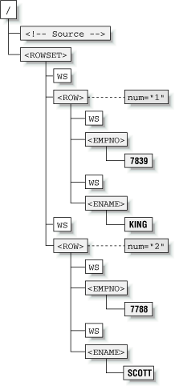
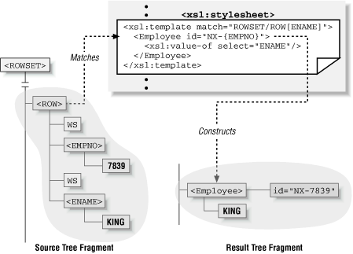
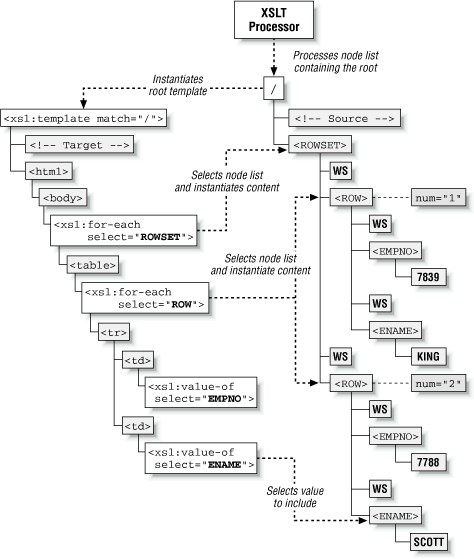
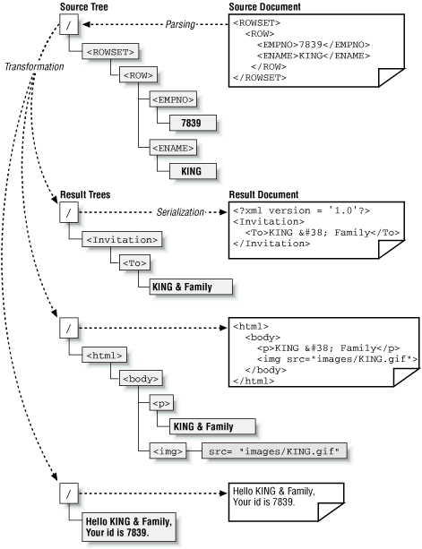
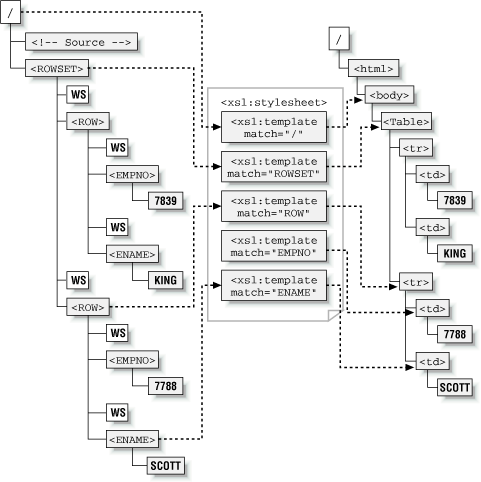
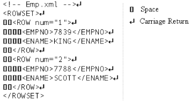
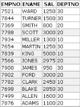
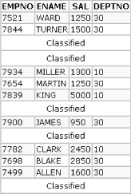
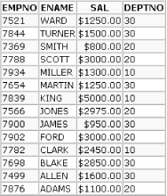

<!doctype html public "-//w3c//dtd html 4.0 transitional//en">
<html>
<head>
   <meta http-equiv="Content-Type" content="text/html; charset=windows-1251">
   <meta name="GENERATOR" content="Mozilla/4.7 [en] (WinNT; U) [Netscape]">
   <title>Building Oracle XML Applications: Chapter 7: Transforming XML with XSLT</title>
<!-- saved from url=(0053) -->
</head>
<body text="#000000" bgcolor="#FFFFFF" link="#990000" vlink="#0000CC">
&nbsp;
<table BORDER=0 CELLSPACING=0 CELLPADDING=0 WIDTH="90%" >
<caption><TBODY>
<br></TBODY></caption>

<tr>
<td COLSPAN="2"><map 
        name=catalog_header_buttons><area coords=407,17,512,32 
        href="http://www.ora.com/catalog/search.html" shape=RECT><area 
        coords=431,3,512,18 href="http://www.ora.com/catalog/prdindex.html" 
        shape=RECT></map></td>
</tr>

<tr>
<td VALIGN=TOP WIDTH="25%"><a href="http://www.ora.com/catalog/orxmlapp/"></a></td>

<td VALIGN=TOP HEIGHT="105">
<h2>
Building Oracle XML Applications</h2>
<font size=-1>By Steve Muench</font>
<br>September 2000
<br>1-56592-691-9, Order Number: 6919
<br>810 pages, $44.95, Includes CD-ROM&nbsp;</td>
</tr>
</table>

<hr noShade SIZE=1><!--sample chapter begins -->
<blockquote>
<h2 class="ChapterTitle">
Chapter 7&nbsp;<br>
<a NAME="9725"></a>Transforming XML with XSLT</h2>
<b>In this chapter:</b>
<br><a href="#9732" class="XRef">XSLT
Processing Mechanics</a>
<br><a href="#9820" class="XRef">Single-Template
Stylesheets</a>
<br><a href="#9896" class="XRef">Understanding
Input and Output Options</a>
<br><a href="#10066" class="XRef">Improving
Flexibility with Multiple Templates</a>

<p class="BodyStart">We've used XSLT stylesheets in previous chapters to
transform database-driven XML into HTML pages, XML datagrams of a particular
vocabulary, SQL scripts, emails, and so on. If you're a developer trying
to harness your database information to maximum advantage on the Web, you'll
find that XSLT is the Swiss Army knife you want permanently attached to
your belt. In a world where the exchange of structured information is core
to your success, and where the ability to rapidly evolve and repurpose
information is paramount, Oracle XML developers who fully understand how
to exploit XSLT are way ahead of the pack.

<p class="Body">XSLT 1.0 is the W3C standard language for describing transformations
between XML documents. It is closely aligned with the companion XPath 1.0
standard and works in concert with it. As we'll see in this chapter, XPath
let's you say what to transform, and XSLT provides the complementary language
describing how to carry out the transformation. An XSLT stylesheet describes
a set of rules for transforming a source XML document into a result XML
document. An XSLT processor is the software that carries out the transformation
based on these rules.

<p class="Body">In the simple examples in previous chapters, we have seen
three primary ways to use the Oracle XSLT processor. We've used the <tt>oraxsl</tt>
command-line utility, the XSLT processor's programmatic API, and the <i>&lt;?xml-stylesheet?></i>
instruction to associate a stylesheet with an XSQL page. In this chapter,
we begin exploring the full power of the XSLT language to understand how
best to use it in our applications.
<h2 class="HeadA">
<a NAME="9732"></a>XSLT Processing Mechanics</h2>

<div class="Body">An XSLT stylesheet describes a transformation that operates
on the tree-structured infoset of a source XML document and produces a
tree of nodes as its output.</div>


<p class="Body">Consider a simple XML document like this:
<pre><tt>&lt;!• Emp.xml -->
&lt;ROWSET>
&nbsp; &lt;ROW num="1">
&nbsp;&nbsp;&nbsp; &lt;EMPNO>7839&lt;/EMPNO>
&nbsp;&nbsp;&nbsp; &lt;ENAME>KING&lt;/ENAME>
&nbsp; &lt;/ROW>
&nbsp; &lt;ROW num="2">
&nbsp;&nbsp;&nbsp; &lt;EMPNO>7788&lt;/EMPNO>
&nbsp;&nbsp;&nbsp; &lt;ENAME>SCOTT&lt;/ENAME>
&nbsp; &lt;/ROW>
&lt;/ROWSET></tt></pre>

<div class="Body">A transformation of this document operates on the document's
corresponding node tree (shown in <a href="#65686" class="XRef">Figure
7-1</a>). The tree of nodes for an XML document always starts with a root
node that represents the document itself. Child nodes of the root can be
the single document element node•<i>&lt;ROWSET></i>, in our example•as
well as comments and processing instructions. Child nodes of the document
element can be any combination of text nodes and element nodes, each of
which may, in turn, have similar child nodes. This nesting of nodes forms
a tree.</div>

<br>&nbsp;
<table BORDER >
<caption><a NAME="65686"></a><b>Figure 7-1.<a NAME="9739"></a>Node tree
for a simple ROWSET document</b>
<br><TBODY>
<br></TBODY></caption>

<tr>
<td>
<div class="FigureHolder"></div>
</td>
</tr>
</table>

<blockquote>
<div class="NoteTip"><b>TIP:</b></div>


<p class="Note-">Remember that an XML document can look like this:
<blockquote>
<pre><CLASS="NOTECODE">&lt;ROWSET>
<CLASS="NOTECODE">&nbsp; &lt;ROW num="1">
<CLASS="NOTECODE">&nbsp;&nbsp;&nbsp; &lt;X>Y&lt;/X>
<CLASS="NOTECODE">&nbsp; &lt;/ROW>
<CLASS="NOTECODELAST">&lt;/ROWSET></pre>
</blockquote>
or it can look like this:
<blockquote><CLASS="NOTECODELAST">&lt;ROWSET>&lt;ROW num="1">&lt;X>Y&lt;/X>&lt;/ROW>&lt;/ROWSET></blockquote>

<div class="Note"><b>NOTE:</b> While both expressions contain a logically
equivalent element structure, the former example contains additional whitespace
(denoted by <tt>WS</tt> nodes in <a href="#65686" class="XRef">Figure
7-1</a>) to give it that indented look. Specifically, it contains a carriage
return at the end of every line followed by a series of spaces at the start
of the next line. When considering an XML document as a tree of nodes,
don't forget that the text nodes containing whitespace also count as nodes
the same as text like <tt>7788</tt> or <tt>SCOTT</tt>. Since you can't
see it, whitespace is easy to forget about.</div>
</blockquote>

<div class="Body">To carry out a transformation, an XSLT processor requires
two ingredients:</div>

<ul>
<li class="ListBullet">
The source tree of nodes</li>

<li class="ListBullet">
An XSLT stylesheet containing a set of transformation rules</li>

<br>&nbsp;
<p>&nbsp;</ul>

<div class="Body">An XSLT stylesheet is an XML document that uses elements
from the XSLT vocabulary to describe a transformation. The document element
of every stylesheet is an <i>&lt;xsl:stylesheet></i> element whose content
is a set of rules describing the transformation to be performed. Each rule
in the stylesheet contains an associated XPath pattern that matches the
nodes in the source document to which that rule should apply. Each rule
is called a <i>template</i> and is represented by an <i>&lt;xsl:template></i>
element with a <tt>match="</tt><i>pattern</i><tt>"</tt> attribute for its
associated XPath match pattern. For example, a rule like this:</div>

<pre><tt>&lt;xsl:template match="/">
&nbsp; &lt;!• Some Result Content: Elements, Attributes, Text, etc. -->
&lt;/xsl:template></tt></pre>

<div class="Body">applies to the root node of the document, matching the
XPath pattern "<tt>/</tt>".</div>


<p class="Body">Similarly, a rule like this:
<pre><tt>&lt;xsl:template match="ROWSET/ROW[ENAME]">
&nbsp; &lt;!• Some Result Content: Elements, Attributes, Text, etc. -->
&lt;/xsl:template></tt></pre>

<div class="Body">applies only to <i>&lt;ROW></i> elements in the source
document that have an <i>&lt;ENAME></i> child element and occur as immediate
children of a <i>&lt;ROWSET></i> element.</div>


<p class="Body">Each rule is called a template because the literal elements
and attributes contained inside the body of the rule act as a blueprint
for constructing a part of the result tree. The XSLT processor constructs
the content of a rule's template in the result tree whenever it processes
a source node matching the rule's pattern. <a href="#24048" class="XRef">Figure
7-2</a> illustrates what happens when a rule like this:
<pre><tt>&lt;xsl:template match="ROWSET/ROW[ENAME]">
&nbsp; &lt;Employee id="NX-{EMPNO}">
&nbsp;&nbsp;&nbsp; &lt;xsl:value-of select="ENAME"/>
&nbsp; &lt;/Employee>
&lt;/xsl:template></tt></pre>

<div class="Body">is triggered by processing a <i>&lt;ROW></i> element
in the source tree that matches the XPath pattern <tt>ROWSET/ROW[ENAME]</tt>.</div>

<br>&nbsp;
<table BORDER >
<caption><a NAME="24048"></a><b>Figure 7-2.<a NAME="9776"></a>Matching
source tree node and constructing result fragment</b>
<br><TBODY>
<br></TBODY></caption>

<tr>
<td>
<div class="FigureHolder"></div>
</td>
</tr>
</table>


<p class="Body">As the matching template is instantiated, the following
three things occur:
<ol>
<li class="ListNumber">
Literal result elements and attributes in the template are created in the
result tree. Result elements and attributes that are <i>not</i> from the
XSLT namespace are considered "literal" since they are constructed as is
in the result tree. In the example just given, the <i>&lt;Employee></i>
element and its <tt>id</tt> attribute are created.</li>

<li class="ListNumber">
Any <i>attribute value</i> templates of the form <tt>{</tt><i>XPathExpr</i><tt>}</tt>
contained within literal attribute values are replaced by the value of
their XPath expression. In the example, the <tt>{EMPNO}</tt> inside the
literal attribute value <tt>NX-{EMPNO}</tt> is replaced by the value of
the <tt>EMPNO</tt> XPath expression. This evaluates to <tt>7839</tt>, so
the final value for the <tt>id</tt> attribute in the result tree is <tt>NX-7839</tt>.</li>

<li class="ListNumber">
Any elements in the XSLT namespace are processed in document order. The
<i>&lt;xsl:value-of></i> element is processed and is replaced by a text
node containing the string value of the XPath expression in its <tt>select</tt>
attribute•in this case, <tt>KING</tt>.</li>

<br>&nbsp;
<p>&nbsp;</ol>

<div class="Body">The basic operation can be summarized as follows: when
a node in the source matches a rule's pattern, the content of that rule
is created in the result tree. Once you grasp this basic operation, the
overall XSLT processing model is easy to understand. Given a source tree
and a stylesheet, the XSLT processor carries out the transformation described
by rules in the stylesheet by following a sequence of steps, just like
the ones we have described.</div>


<p class="Body">A list of nodes in the source tree is processed to create
a portion, or "fragment," of the result tree. The result tree fragment
for the list of nodes is created by processing the nodes in order and concatenating
each of their respective result tree fragments together in the same order.
The node in the current node list being processed is known, not surprisingly,
as the <i>current node</i>. The current node is processed by considering
the set of all possible rules that match it and then selecting the single
rule that matches it best. Only a single rule is ever used to process the
current node in the current node list.

<p class="Body">To start the process, the XSLT processor begins with a
node list containing only the document root. It finds the template matching
this root node•typically the rule with <tt>match="/"</tt>•and instantiates
the contents of the template in the result tree, following the three basic
processing steps to complete the job. If the template contains elements
from the XSLT namespace that select other nodes to process, the sequence
of matching and template content instantiation continues recursively until
there are no nodes left to process. When processing is completed, the result
tree represents the target document produced by the transformation.
<h2 class="HeadA">
<a NAME="9820"></a>Single-Template Stylesheets</h2>

<div class="Body">Many useful transformations can be expressed with just
a single-root template. We'll examine the single-template stylesheet here,
but we'll spend the rest of this chapter learning why there's a world beyond
the root template and why it's worth learning about.</div>


<p class="Body">All of the stylesheets we've seen so far for transforming
XML into HTML either have looked like this:
<pre><tt>&lt;xsl:stylesheet version="1.0" xmlns:xsl="http://www.w3.org/1999/XSL/Transform">&nbsp;
&nbsp; &lt;!• The "root" or "main" template -->
&nbsp; &lt;xsl:template match="/">&nbsp;
&nbsp;&nbsp;&nbsp; &lt;html>
&nbsp;&nbsp;&nbsp;&nbsp;&nbsp; &lt;body>
&nbsp;&nbsp;&nbsp;&nbsp;&nbsp;&nbsp;&nbsp; &lt;!•&nbsp;
&nbsp;&nbsp;&nbsp;&nbsp;&nbsp;&nbsp;&nbsp;&nbsp; | Literal result elements and attributes, intermingled with
&nbsp;&nbsp;&nbsp;&nbsp;&nbsp;&nbsp;&nbsp;&nbsp; | &lt;xsl:for-each>, &lt;xsl:value-of>, attribute value templates, etc.
&nbsp;&nbsp;&nbsp;&nbsp;&nbsp;&nbsp;&nbsp;&nbsp; +-->
&nbsp;&nbsp;&nbsp;&nbsp; &lt;/body>
&nbsp;&nbsp;&nbsp; &lt;/html>
&nbsp; &lt;xsl:template>
&lt;/xsl:stylesheet></tt></pre>

<div class="Body">or have used the simple form of the single-root template
stylesheet, which looks like this:</div>

<pre><tt>&lt;!• In the "simple form" of a stylesheet, the root template is implied -->
&lt;html xsl:version="1.0" xmlns:xsl="http://www.w3.org/1999/XSL/Transform">
&nbsp; &lt;body>
&nbsp;&nbsp;&nbsp;&nbsp; &lt;!•&nbsp;
&nbsp;&nbsp;&nbsp;&nbsp;&nbsp; | Literal result elements and attributes, intermingled with
&nbsp;&nbsp;&nbsp;&nbsp;&nbsp; | &lt;xsl:for-each>, &lt;xsl:value-of>, attribute value templates, etc.
&nbsp;&nbsp;&nbsp;&nbsp;&nbsp; +-->
&nbsp; &lt;/body>
&lt;/html></tt></pre>

<blockquote>
<div class="NoteTip"><b>TIP:</b></div>


<p class="Note-">When you see the <tt>xsl</tt> namespace declaration:
<blockquote><CLASS="NOTECODELAST">xmlns:xsl="http://www.w3.org/1999/XSL/Transform"</blockquote>

<div class="Note">it is natural to think that the XSLT processor will try
to access that URL when your stylesheet is processed. However, the declaration
is only used as a unique string to identify the namespace for XSLT. If
you do not provide this <i>exact</i> string as the namespace URI for the
<tt>xsl</tt> namespace prefix, the XSLT processor will simply ignore <i>&lt;xsl:template></i>,
<i>&lt;xsl:for-each></i>, <i>&lt;xsl:value-of></i>, and other elements
with the <tt>xsl</tt> prefix since it will not recognize them as XSLT actions.</div>
</blockquote>

<div class="Body">Consider the stylesheet in <a href="#95465" class="XRef">Example
7-1</a>.</div>

<p><a NAME="95465"></a><b>Example 7-1:<a NAME="9840"></a>Single-Root Template
Stylesheet to Transform Emp.xml to HTML</b>
<pre><tt>&lt;xsl:stylesheet version="1.0" xmlns:xsl="http://www.w3.org/1999/XSL/Transform">
&nbsp; &lt;xsl:template match="/">
&nbsp;&nbsp;&nbsp; &lt;html>
&nbsp;&nbsp;&nbsp;&nbsp;&nbsp; &lt;body>
&nbsp;&nbsp;&nbsp;&nbsp;&nbsp;&nbsp;&nbsp; &lt;xsl:for-each select="ROWSET">
&nbsp;&nbsp;&nbsp;&nbsp;&nbsp;&nbsp;&nbsp;&nbsp;&nbsp; &lt;table border="1" cellspacing="0">
&nbsp;&nbsp;&nbsp;&nbsp;&nbsp;&nbsp;&nbsp;&nbsp;&nbsp;&nbsp;&nbsp; &lt;xsl:for-each select="ROW">
&nbsp;&nbsp;&nbsp;&nbsp;&nbsp;&nbsp;&nbsp;&nbsp;&nbsp;&nbsp;&nbsp;&nbsp;&nbsp; &lt;tr>
&nbsp;&nbsp;&nbsp;&nbsp;&nbsp;&nbsp;&nbsp;&nbsp;&nbsp;&nbsp;&nbsp;&nbsp;&nbsp;&nbsp;&nbsp; &lt;td>&lt;xsl:value-of select="EMPNO"/>&lt;/td>
&nbsp;&nbsp;&nbsp;&nbsp;&nbsp;&nbsp;&nbsp;&nbsp;&nbsp;&nbsp;&nbsp;&nbsp;&nbsp;&nbsp;&nbsp; &lt;td>&lt;xsl:value-of select="ENAME"/>&lt;/td>
&nbsp;&nbsp;&nbsp;&nbsp;&nbsp;&nbsp;&nbsp;&nbsp;&nbsp;&nbsp;&nbsp;&nbsp;&nbsp; &lt;/tr>
&nbsp;&nbsp;&nbsp;&nbsp;&nbsp;&nbsp;&nbsp;&nbsp;&nbsp;&nbsp;&nbsp; &lt;/xsl:for-each>
&nbsp;&nbsp;&nbsp;&nbsp;&nbsp;&nbsp;&nbsp;&nbsp;&nbsp; &lt;/table>
&nbsp;&nbsp;&nbsp;&nbsp;&nbsp;&nbsp;&nbsp; &lt;/xsl:for-each>
&nbsp;&nbsp;&nbsp;&nbsp;&nbsp; &lt;/body>
&nbsp;&nbsp;&nbsp; &lt;/html>
&nbsp; &lt;/xsl:template>
&lt;/xsl:stylesheet></tt></pre>

<div class="Body">This transforms our simple <i>Emp.xml</i> <i>&lt;ROWSET></i>
document into an HTML document with the employee data in a table, as shown
in <a href="#58259" class="XRef">Figure
7-3</a>.</div>

<br>&nbsp;
<table BORDER >
<caption><a NAME="58259"></a><b>Figure 7-3.<a NAME="9846"></a>Employee
data in an HTML table</b>
<br><TBODY>
<br></TBODY></caption>

<tr>
<td>
<div class="FigureHolder"></div>
</td>
</tr>
</table>


<p class="Body">The content of the root template is a mixture of the familiar
literal HTML elements <i>&lt;html></i>, <i>&lt;body></i>, <i>&lt;table></i>,
<i>&lt;tr></i>, and <i>&lt;td></i>, strategically sprinkled with <i>&lt;xsl:for-each></i>
and <i>&lt;xsl:value-of></i> elements. When the XSLT processor instantiates
the root template, the document root node is the current node. The <i>&lt;xsl:for-each></i>
element:
<ol>
<li class="ListNumber">
Selects a list of source tree nodes to process</li>

<li class="ListNumber">
Makes this list of selected nodes the current node list</li>

<li class="ListNumber">
Begins processing the nodes in the current node list in order</li>

<br>&nbsp;
<p>&nbsp;</ol>

<div class="Body">The content of the <i>&lt;xsl:for-each></i> element is
instantiated in the result tree for each node in the current node list.
The content of this instantiated result tree fragment is processed (with
respect to the current node) for additional XSLT elements, if any.</div>


<p class="Body">Any <i>&lt;xsl:value-of></i> elements encountered in the
instantiated result tree fragments are replaced by the string value of
the XPath expression in their <tt>select</tt> attribute. <a href="#82863" class="XRef">Figure
7-4</a> illustrates the process.
<br>&nbsp;
<table BORDER >
<caption><a NAME="82863"></a><b>Figure 7-4.<a NAME="9871"></a>Understanding
a single-template stylesheet</b>
<br><TBODY>
<br></TBODY></caption>

<tr>
<td>
<div class="FigureHolder"></div>
</td>
</tr>
</table>


<p class="Body">The resulting HTML document is shown in <a href="#41754" class="XRef">Example
7-2</a>.
<p><a NAME="41754"></a><b>Example 7-2:<a NAME="9876"></a>Output of Emp.xml
Using Single-Root Template Stylesheet</b>
<pre><tt>&lt;html>
&nbsp;&nbsp; &lt;body>
&nbsp;&nbsp;&nbsp;&nbsp;&nbsp; &lt;table border="1" cellspacing="0">
&nbsp;&nbsp;&nbsp;&nbsp;&nbsp;&nbsp;&nbsp;&nbsp; &lt;tr>
&nbsp;&nbsp;&nbsp;&nbsp;&nbsp;&nbsp;&nbsp;&nbsp;&nbsp;&nbsp;&nbsp; &lt;td>7839&lt;/td>
&nbsp;&nbsp;&nbsp;&nbsp;&nbsp;&nbsp;&nbsp;&nbsp;&nbsp;&nbsp;&nbsp; &lt;td>KING&lt;/td>
&nbsp;&nbsp;&nbsp;&nbsp;&nbsp;&nbsp;&nbsp;&nbsp; &lt;/tr>
&nbsp;&nbsp;&nbsp;&nbsp;&nbsp;&nbsp;&nbsp;&nbsp; &lt;tr>
&nbsp;&nbsp;&nbsp;&nbsp;&nbsp;&nbsp;&nbsp;&nbsp;&nbsp;&nbsp;&nbsp; &lt;td>7788&lt;/td>
&nbsp;&nbsp;&nbsp;&nbsp;&nbsp;&nbsp;&nbsp;&nbsp;&nbsp;&nbsp;&nbsp; &lt;td>SCOTT&lt;/td>
&nbsp;&nbsp;&nbsp;&nbsp;&nbsp;&nbsp;&nbsp;&nbsp; &lt;/tr>
&nbsp;&nbsp;&nbsp;&nbsp;&nbsp; &lt;/table>
&nbsp;&nbsp; &lt;/body>
&lt;/html></tt></pre>

<div class="Body">In this example, the XSLT processor only performs template
matching for the root node. All subsequent nodes selected for processing
are the result of processing the <i>&lt;xsl:for-each></i> action's <tt>select</tt>
patterns and iterating over the node-sets they return.</div>


<p class="Body">If a stylesheet uses only the root template, then it can
optionally use the simple-form stylesheet syntax that allows <i>&lt;xsl:stylesheet></i>
and <i>&lt;xsl:template match="/"></i> to be left out. In this case, the
literal element that would have been the first element in the <i>root</i>
template is instead the first element of the entire stylesheet. You must
include the namespace declaration for the XSLT namespace on the literal
result element that is now the document element of the stylesheet document,
as well as add the namespace-qualified <tt>xsl:version="1.0"</tt> attribute
to the element:
<pre><tt>&lt;html xsl:version="1.0" xmlns:xsl="http://www.w3.org/1999/XSL/Transform">
&nbsp; &lt;body>
&nbsp;&nbsp;&nbsp; &lt;xsl:for-each select="ROWSET">
&nbsp;&nbsp;&nbsp;&nbsp;&nbsp; &lt;table border="1" cellspacing="0">
&nbsp;&nbsp;&nbsp;&nbsp;&nbsp;&nbsp;&nbsp; &lt;xsl:for-each select="ROW">
&nbsp;&nbsp;&nbsp;&nbsp;&nbsp;&nbsp;&nbsp;&nbsp;&nbsp; &lt;tr>
&nbsp;&nbsp;&nbsp;&nbsp;&nbsp;&nbsp;&nbsp;&nbsp;&nbsp;&nbsp;&nbsp; &lt;td>&lt;xsl:value-of select="EMPNO"/>&lt;/td>
&nbsp;&nbsp;&nbsp;&nbsp;&nbsp;&nbsp;&nbsp;&nbsp;&nbsp;&nbsp;&nbsp; &lt;td>&lt;xsl:value-of select="ENAME"/>&lt;/td>
&nbsp;&nbsp;&nbsp;&nbsp;&nbsp;&nbsp;&nbsp;&nbsp;&nbsp; &lt;/tr>
&nbsp;&nbsp;&nbsp;&nbsp;&nbsp;&nbsp;&nbsp; &lt;/xsl:for-each>
&nbsp;&nbsp;&nbsp;&nbsp;&nbsp; &lt;/table>
&nbsp;&nbsp;&nbsp; &lt;/xsl:for-each>
&nbsp; &lt;/body>
&lt;/html></tt></pre>

<div class="Body">This produces the same results as the stylesheet with
normal syntax we saw earlier.</div>

<h2 class="HeadA">
<a NAME="9896"></a>Understanding Input and Output Options</h2>

<div class="Body">The XSLT transformation process described earlier was
explained in terms of node trees. These trees of nodes are the logical
form that both the source and result of a transformation can take on the
"inside" of a transformation being performed by an XSLT processor. However,
this is what happens on the outside:</div>

<ul>
<li class="ListBullet">
The source document typically begins as a stream of human-readable characters.</li>

<li class="ListBullet">
The result of the transformation typically needs to be written out as another
stream of human-readable characters•for example, to send the result back
to a requesting browser or to save the result in a file for later.</li>

<br>&nbsp;
<p>&nbsp;</ul>

<div class="Body">The input to an XSLT transformation must be a tree of
source nodes produced by either parsing a well-formed XML document or creating
the tree programmatically (for example, via DOM or SAX APIs).</div>


<p class="Body">All XSLT transformations process the source node tree to
produce a tree of result nodes. If multiple transformations are being applied
in sequence by your application, the result tree of one transformation
becomes the source tree of the next transformation in sequence. When no
more transformations need to be done, the final tree of result nodes needs
to be written out as a stream of characters again. This process is called
<i>serializing</i> the result tree.

<p class="Body">Simple-form stylesheets take advantage of default serialization
rules described by the XSLT 1.0 specification to make common cases simple.
They serialize transformed output in the default UTF-8 character set and
support either of the following output formats:
<ul>
<li class="ListBullet">
Indented, properly formatted HTML output, with a media type of <tt>text/html</tt></li>

<li class="ListBullet">
Non-indented XML output with no <tt>DOCTYPE</tt> and a media type of <tt>text/xml</tt></li>

<br>&nbsp;
<p>&nbsp;</ul>

<div class="Body">Going beyond these defaults requires using the more verbose,
standard XSLT stylesheet syntax that begins with an <i>&lt;xsl:stylesheet></i>
element that includes as a direct child an <i>&lt;xsl:output></i> element,
which offers control over the serialization process.</div>


<p class="Body">The most important serialization control to understand
is the <i>output method</i>. This governs the basic rules that the XSLT
processor will use when serializing the result tree nodes to an output
stream. XSLT 1.0 supports three different output methods:
<dl>
<dt class="ListVariableTerm">
<tt>&lt;xsl:output method="xml"/></tt></dt>

<dd class="ListVariable">
This method is the default and outputs the nodes as well-formed XML.</dd>

<dt class="ListVariableTerm">
<tt>&lt;xsl:output method="html"/></tt></dt>

<dd class="ListVariable">
This method is the default for result trees whose document element is <i>&lt;html></i>,
<i>&lt;HTML></i>, or any case-variation in between. It serializes elements
and attributes in an HTML 4.0-friendly way that ensures existing browsers
will recognize it. In particular, it does <i>not</i> write out well-formed
XML.</dd>

<dt class="ListVariableTerm">
<tt>&lt;xsl:output method="text"/></tt></dt>

<dd class="ListVariable">
This method outputs only the text nodes in the result tree in document
order. It is used for transforming XML into programming language source
files, emails, or other plain text output.</dd>

<br>&nbsp;
<p>&nbsp;</dl>

<div class="Body">Consider the following example source document:</div>

<pre><tt>&lt;!• King.xml -->
&lt;ROWSET>
&nbsp; &lt;ROW>
&nbsp;&nbsp;&nbsp; &lt;EMPNO>7839&lt;/EMPNO>
&nbsp;&nbsp;&nbsp; &lt;ENAME>KING&lt;/ENAME>
&nbsp; &lt;/ROW>
&lt;/ROWSET></tt></pre>

<div class="Body">The following stylesheet uses the <tt>xml</tt> output
method to transform this <i>King.xml &lt;ROWSET></i> document into an <i>&lt;Invitation></i>
document:</div>

<pre><tt>&lt;xsl:stylesheet version="1.0" xmlns:xsl="http://www.w3.org/1999/XSL/Transform">
&nbsp; &lt;xsl:output method="xml" indent="yes"/>
&nbsp; &lt;xsl:template match="/">
&nbsp;&nbsp;&nbsp; &lt;Invitation>
&nbsp;&nbsp;&nbsp;&nbsp;&nbsp; &lt;To>
&nbsp;&nbsp;&nbsp;&nbsp;&nbsp;&nbsp;&nbsp; &lt;xsl:value-of select="ROWSET/ROW/ENAME"/>
&nbsp;&nbsp;&nbsp;&nbsp;&nbsp;&nbsp;&nbsp; &lt;xsl:text> &amp;amp; Family&lt;/xsl:text>
&nbsp;&nbsp;&nbsp;&nbsp;&nbsp; &lt;/To>
&nbsp;&nbsp;&nbsp; &lt;/Invitation>
&nbsp; &lt;/xsl:template>
&lt;/xsl:stylesheet></tt></pre>

<div class="Body">Transforming <i>King.xml</i> using this stylesheet produces
the following result:</div>

<pre><tt>&lt;?xml version="1.0"?>
&lt;Invitation>
&nbsp; &lt;To>KING &amp;#38; Family&lt;/To>
&lt;/Invitation></tt></pre>

<blockquote>
<div class="NoteTip"><b>TIP:</b></div>


<p class="Note">Remember that XSLT stylesheets are well-formed XML documents,
so characters that need to be escaped (like <tt>&amp;</tt> and <tt>&lt;</tt>)
must be escaped with <tt>&amp;amp;</tt> and <tt>&amp;lt;</tt> in your stylesheets,
too. While the <tt>&amp;gt;</tt> entity exists to escape the <tt>></tt>
character, its use is optional. Finally, note that a numerical character
entity like <tt>&amp;#38;</tt> can be used as an alternative to represent
the character whose Unicode number in decimal is 38, which is the ampersand,
and some processors choose to emit all reserved characters using this numerical
approach. In your own stylesheets, if you are more comfortable with hexadecimal,
you can use a hexadecimal numerical entity as well. For example, a carriage
return, Unicode number 10 or 0A in hex, can be represented alternatively
as <tt>&amp;#10;</tt> using decimal or <tt>&amp;#x0A;</tt> using hex.</blockquote>

<div class="Body">The following stylesheet uses the <tt>html</tt> output
method and transforms the <i>&lt;ROWSET></i> document into a simple HTML
page with a paragraph tag and an image:</div>

<pre><tt>&lt;xsl:stylesheet version="1.0" xmlns:xsl="http://www.w3.org/1999/XSL/Transform">
&nbsp; &lt;xsl:output method="html"/>
&nbsp; &lt;xsl:template match="/">
&nbsp;&nbsp;&nbsp; &lt;html>
&nbsp;&nbsp;&nbsp;&nbsp;&nbsp; &lt;body>
&nbsp;&nbsp;&nbsp;&nbsp;&nbsp;&nbsp;&nbsp; &lt;p>
&nbsp;&nbsp;&nbsp;&nbsp;&nbsp;&nbsp;&nbsp;&nbsp;&nbsp; &lt;xsl:value-of select="ROWSET/ROW/ENAME"/>
&nbsp;&nbsp;&nbsp;&nbsp;&nbsp;&nbsp;&nbsp;&nbsp;&nbsp; &lt;xsl:text> &amp;amp; Family&lt;/xsl:text>
&nbsp;&nbsp;&nbsp;&nbsp;&nbsp;&nbsp;&nbsp; &lt;/p>
&nbsp;&nbsp;&nbsp;&nbsp;&nbsp;&nbsp;&nbsp; &lt;img src="images/{ROWSET/ROW/EMPNO}.gif"/>
&nbsp;&nbsp;&nbsp;&nbsp;&nbsp; &lt;/body>
&nbsp;&nbsp;&nbsp; &lt;/html>
&nbsp; &lt;/xsl:template>
&lt;/xsl:stylesheet></tt></pre>

<div class="Body">Transforming <i>King.xml</i> using this stylesheet produces
the following result:</div>

<pre><tt>&lt;html>
&nbsp; &lt;body>
&nbsp;&nbsp;&nbsp; &lt;p>KING &amp;#38; Family&lt;/p>
&nbsp;&nbsp;&nbsp; &lt;img src="images/7839.gif">
&nbsp; &lt;/body>
&lt;/html></tt></pre>

<div class="Body">Finally, this third example stylesheet uses the <tt>text</tt>
output method to transform the <tt>&lt;ROWSET></tt> document into plain
text output with no markup tags:</div>

<pre><tt>&lt;xsl:stylesheet version="1.0" xmlns:xsl="http://www.w3.org/1999/XSL/Transform">
&nbsp; &lt;xsl:output method="text"/>
&nbsp; &lt;xsl:template match="/">
&nbsp;&nbsp;&nbsp; &lt;xsl:text>Hello &lt;/xsl:text>
&nbsp;&nbsp;&nbsp; &lt;xsl:value-of select="ROWSET/ROW/ENAME"/>
&nbsp;&nbsp;&nbsp;&nbsp;&nbsp; &lt;xsl:text> &amp;amp; Family,&amp;#x0A;&lt;/xsl:text>
&nbsp;&nbsp;&nbsp;&nbsp;&nbsp; &lt;xsl:text>Your id is &lt;/xsl:text>
&nbsp;&nbsp;&nbsp;&nbsp;&nbsp; &lt;xsl:value-of select="ROWSET/ROW/EMPNO"/>
&nbsp; &lt;/xsl:template>
&lt;/xsl:stylesheet></tt></pre>

<div class="Body">This produces the result:</div>

<pre><tt>Hello King &amp; Family,
Your id is 7839</tt></pre>

<div class="Body">Note that we're using <i>&lt;xsl:text></i> elements to
include literal text in the result of the transformation. In general, whitespace
is ignored in the stylesheet document, so tags can be nicely indented for
readability. However, the whitespace inside of <i>&lt;xsl:text></i> elements
is respected, so we use <i>&lt;xsl:text></i> when we want precise control
over the whitespace that gets created in the resulting document. Literal
spaces, tabs, and carriage returns included in <i>&lt;xsl:text></i> elements
are included verbatim in the result. Note the use of <tt>&amp;x0A;</tt>
to represent the literal carriage return in the result.</div>


<p class="Body"><a href="#64073" class="XRef">Figure
7-5</a> illustrates the source document, source node tree, result node
trees, and final serialization of the previous three transformations, abiding
by each transformation's specified output method.
<table BORDER >
<caption><a NAME="64073"></a><b>Figure 7-5.<a NAME="9981"></a>Understanding
how XSLT output methods affect serialization</b>
<br><TBODY>
<br></TBODY></caption>

<tr>
<td>
<div class="FigureHolder"></div>
</td>
</tr>
</table>


<p class="Body">In addition to the output method, several other interesting
serialization hints can be specified on the <i>&lt;xsl:output></i> element
in a stylesheet. <a href="#9988" class="XRef">Table
7-1</a> summarizes the <tt>&lt;xsl:output></tt> settings that come in handy
most frequently.
<table BORDER >
<caption><a NAME="9988"></a><b>Table 7-1:<a NAME="9988"></a>Common xsl:output
Settings&nbsp;</b>
<br><TBODY>
<br></TBODY></caption>

<tr>
<th>
<div class="CellHeading">If target document needs&nbsp;</div>
</th>

<th>
<div class="CellHeading">Set this &lt;xsl:output> attribute&nbsp;</div>
</th>
</tr>

<tr>
<td>
<div class="CellBody">Raw text output&nbsp;</div>
</td>

<td>
<div class="CellBody"><tt>method="text"</tt></div>
</td>
</tr>

<tr>
<td>
<div class="CellBody">HTML output&nbsp;</div>
</td>

<td>
<div class="CellBody"><tt>method="html"</tt></div>
</td>
</tr>

<tr>
<td>
<div class="CellBody">XML output&nbsp;</div>
</td>

<td>
<div class="CellBody"><tt>method="xml"</tt></div>
</td>
</tr>

<tr>
<td>
<div class="CellBody">Character set encoding <i>ENC</i></div>
</td>

<td>
<div class="CellBody"><tt>encoding="</tt><i>ENC</i><tt>"</tt></div>
</td>
</tr>

<tr>
<td>
<div class="CellBody">SYSTEM Identifier <i>URI</i></div>
</td>

<td>
<div class="CellBody"><tt>doctype-system="</tt><i>URI</i><tt>"</tt></div>
</td>
</tr>

<tr>
<td>
<div class="CellBody">PUBLIC Identifier <i>URI</i></div>
</td>

<td>
<div class="CellBody"><tt>doctype-public="</tt><i>URI</i><tt>"</tt></div>
</td>
</tr>

<tr>
<td>
<div class="CellBody">Beautifying whitespace added&nbsp;</div>
</td>

<td>
<div class="CellBody"><tt>indent="yes"</tt></div>
</td>
</tr>

<tr>
<td>
<div class="CellBody">No additional whitespace added&nbsp;</div>
</td>

<td>
<div class="CellBody"><tt>indent="no"</tt></div>
</td>
</tr>

<tr>
<td>
<div class="CellBody">MIME/Media Type of <i>TYP</i></div>
</td>

<td>
<div class="CellBody"><tt>media-type="</tt><i>TYP</i><tt>"</tt></div>
</td>
</tr>
</table>


<p class="Body">With the fundamentals of single-root template transformations
and their most common serialization options now under our belts, let's
move on to understand why developers ever bother to use more than just
a single-root template.
<h2 class="HeadA">
<a NAME="10066"></a>Improving Flexibility with Multiple Templates</h2>

<div class="Body">As we've learned, a stylesheet is a set of rules. When
you use only a single-root template, your stylesheet has, accordingly,
only a single rule: "When you see the root of the source document, do everything
inside this!"</div>


<p class="Body">As we'll learn in this section, this strategy has pros
and cons similar to those of adopting an "everything in a single <tt>main(
)</tt> method" coding style in Java:
<pre><tt>public class doit {
&nbsp; public static void main(&nbsp; ) (String[] args) {
&nbsp;&nbsp;&nbsp; // When this program runs, do everything inside this!
&nbsp; }
}</tt></pre>

<div class="Body">Developers learning Java find it easy to start with this
simple approach, but they quickly find themselves writing repetitive code
that would be nice to factor into helper methods. When this occurs, they
would like to stand on the shoulders of other developers by extending others'
existing work, overriding just the methods that need to behave differently.</div>


<p class="Body">We'll see that there is a nice conceptual analogy between
methods in Java classes and templates in XSLT stylesheets. In Java, methods
are both the unit of behavior and the unit of overriding. If you write
a class with all of the programming logic in a single <tt>main( )</tt>
method, then someone extending your class can only override that single
<tt>main( )</tt> method. This means they have to rewrite all the logic
just to change one small behavioral aspect. The more effectively a class's
methods are logically factored to represent the set of subtasks the class
must perform, the easier it is to reuse a single useful method when appropriate,
and the easier it is to override just a part of the existing behavior,
if necessary.

<p class="Body">In XSLT, <i>templates</i> are the unit of behavior as well
as the unit of overriding. Similar to the Java analogy above, if you write
a stylesheet with all of the transformation logic in a single-root template,
then someone extending your stylesheet can only override that entire template
to change the way your transformation behaves. The more effectively a stylesheet's
templates are logically factored to reflect the individual transformation
tasks to be performed, the easier it is to reuse a single useful template
when appropriate, and the easier it is to override just a part of the existing
transformation behavior, if necessary.
<h3 class="HeadB">
<a NAME="10084"></a>Using Multiple Templates</h3>

<div class="Body"><a href="#24510" class="XRef">Example
7-3</a> shows what our single-root template stylesheet from the previous
section looks like if we factored it into multiple templates. We've created
a template for each element in the source document that we will encounter
and we have made each template responsible for a small part of the transformation
job. Each template uses the <i>&lt;xsl:apply-templates></i> action to tell
the XSLT processor to "carry on processing my children nodes" so recursive
processing of the tree can continue.</div>

<p><a NAME="24510"></a><b>Example 7-3:<a NAME="10089"></a>Simple Stylesheet
to Produce HTML Using Multiple Templates</b>
<pre><tt>&lt;xsl:stylesheet xmlns:xsl="http://www.w3.org/1999/XSL/Transform" version="1.0">
&nbsp; &lt;xsl:output indent="no"/>
&nbsp; &lt;xsl:template match="/">
&nbsp;&nbsp;&nbsp; &lt;html>
&nbsp;&nbsp;&nbsp;&nbsp;&nbsp; &lt;body>&lt;xsl:apply-templates/>&lt;/body>
&nbsp;&nbsp;&nbsp; &lt;/html>
&nbsp; &lt;/xsl:template>
&nbsp; &lt;xsl:template match="ROWSET">
&nbsp;&nbsp;&nbsp; &lt;table border="1" cellspacing="0">&lt;xsl:apply-templates/>&lt;/table>
&nbsp; &lt;/xsl:template>
&nbsp; &lt;xsl:template match="ROW">
&nbsp;&nbsp;&nbsp; &lt;tr>&lt;xsl:apply-templates/>&lt;/tr>
&nbsp; &lt;/xsl:template>
&nbsp; &lt;xsl:template match="EMPNO">
&nbsp;&nbsp;&nbsp; &lt;td>&lt;xsl:apply-templates/>&lt;/td>
&nbsp; &lt;/xsl:template>
&nbsp; &lt;xsl:template match="ENAME">
&nbsp;&nbsp;&nbsp; &lt;td>&lt;xsl:apply-templates/>&lt;/td>
&nbsp; &lt;/xsl:template>
&lt;/xsl:stylesheet></tt></pre>

<div class="Body">The way to read a template that looks like this:</div>

<pre><tt>&lt;xsl:template match="ROWSET">&nbsp;
&nbsp; &lt;table border="1" cellspacing="0">&lt;xsl:apply-templates/>&lt;/table>&nbsp;
&lt;/xsl:template></tt></pre>

<div class="Body">is as follows:</div>

<blockquote class=Quote>Whenever we match a <i>&lt;ROWSET></i> element
in the source tree, construct a <i>&lt;table></i> element in the result
tree to contain the results of processing the <i>children</i> of the current
<i>&lt;ROWSET></i>, and go process those children now!</blockquote>

<div class="Body">When the XSLT processor encounters an <tt>&lt;xsl:apply-templates></tt>
action, it processes the current node's children and includes any result
tree fragments constructed by that processing at the location in the result
tree where the <tt>&lt;xsl:apply-templates></tt> appears. Accordingly,
since here <tt>&lt;xsl:apply-templates></tt> is nested inside the literal
<tt>&lt;table></tt> result element, the result of processing the children
of the current <tt>&lt;ROWSET></tt> element will be nested inside the <tt>&lt;table></tt>
element in the result tree.</div>


<p class="Body">You can read the entire stylesheet in <a href="#24510" class="XRef">Example
7-3</a> as shown in the following table:
<table BORDER >
<caption><TBODY>
<br></TBODY></caption>

<tr>
<th>
<div class="CellHeading">When we match</div>
</th>

<th>
<div class="CellHeading">Construct</div>
</th>
</tr>

<tr>
<td>
<div class="CellBody">The source document's root "<tt>/</tt>"</div>
</td>

<td>
<div class="CellBody"><i>&lt;html></i> element and nested <i>&lt;body></i>
element in the result tree to contain the results of processing the document•that
is, the children of the root</div>
</td>
</tr>

<tr>
<td>
<div class="CellBody"><i>&lt;ROWSET></i> element</div>
</td>

<td>
<div class="CellBody"><i>&lt;table></i> to contain the results of processing
the current <i>&lt;ROWSET></i>'s child nodes</div>
</td>
</tr>

<tr>
<td>
<div class="CellBody"><i>&lt;ROW></i> element</div>
</td>

<td>
<div class="CellBody"><i>&lt;tr></i> to contain the results of processing
the current <i>&lt;ROW></i>'s child nodes</div>
</td>
</tr>

<tr>
<td>
<div class="CellBody"><i>&lt;EMPNO></i> element</div>
</td>

<td>
<div class="CellBody"><i>&lt;td></i> to contain the results of processing
the current <i>&lt;EMPNO></i>'s child nodes</div>
</td>
</tr>

<tr>
<td>
<div class="CellBody"><i>&lt;ENAME></i> element</div>
</td>

<td>
<div class="CellBody"><i>&lt;td></i> to contain the results of processing
the current <i>&lt;ENAME></i>'s child nodes</div>
</td>
</tr>
</table>


<p class="Body"><a href="#99384" class="XRef">Figure
7-6</a> illustrates the process that takes place during the transformation.
<br>&nbsp;
<table BORDER >
<caption><a NAME="99384"></a><b>Figure 7-6.<a NAME="10184"></a>Transforming
a source document using multiple templates</b>
<br><TBODY>
<br></TBODY></caption>

<tr>
<td>
<div class="FigureHolder"></div>
</td>
</tr>
</table>


<p class="Body">As usual, the processor begins by processing the root node
in the source tree and finding a rule that matches it. Our stylesheet has
a <tt>match="/"</tt> template, so it is instantiated with the root node
as the current node. The root template constructs the <i>&lt;html></i>
and <i>&lt;body></i> elements, and then the <i>&lt;xsl:apply-templates></i>
is executed to process the list of children of the document root. The list
of children of the root includes one comment node and one element node,
the <i>&lt;ROWSET></i>. To construct the result tree fragment for this
list of nodes, the processor processes each one in order. The comment node
is ignored (we'll learn why in a minute) and then the <i>&lt;ROWSET></i>
element is processed by finding a rule that matches it. Our <tt>match="ROWSET"</tt>
template matches, so the processor instantiates it in the result tree.
This creates a literal <i>&lt;table></i> element in the result tree nested
inside the previously instantiated <i>&lt;html></i> and <i>&lt;body></i>
elements; then <i>&lt;xsl:apply-templates></i> is executed to process the
list of children of the current <i>&lt;ROWSET></i> element. The children
of the current <i>&lt;ROWSET></i> element are the following four nodes,
listed here in order:
<ol>
<li class="ListNumber">
Text node containing whitespace</li>

<li class="ListNumber">
<i>&lt;ROW></i> element</li>

<li class="ListNumber">
Text node containing whitespace</li>

<li class="ListNumber">
<i>&lt;ROW></i> element</li>

<br>&nbsp;
<p>&nbsp;</ol>

<div class="Body">Each node in the current node list is processed by finding
a matching template and instantiating it. This has the effect of copying
the whitespace to the result tree and instantiating the content of the
<tt>match="ROW"</tt> template twice to construct two <i>&lt;tr></i> elements
in the result tree. And the process continues.</div>


<p class="Body">The result of this transformation is the same as the result
of our single-root template stylesheet, but as we'll see in the next several
examples, having things broken into multiple templates makes for a much
more powerful paradigm.
<h3 class="HeadB">
<a NAME="10188"></a>Understanding Built-in Templates</h3>

<div class="Body">Before moving on, we need to understand why comments
were ignored and how whitespace and the text nodes for <tt>7839</tt>, <tt>KING</tt>,
<tt>7788</tt>, and <tt>SCOTT</tt> found their way into the result tree.</div>


<p class="Body">Both of these results occurred based on the following built-in
templates that are included by the XSLT processor as part of every stylesheet:
<pre><tt>&lt;xsl:template match="/|*">
&nbsp; &lt;xsl:apply-templates/>
&lt;/xsl:template>
&lt;xsl:template match="text(&nbsp; )|@*">
&nbsp; &lt;xsl:value-of select="."/>
&lt;/xsl:template>
&lt;xsl:template match="processing-instruction(&nbsp; )|comment(&nbsp; )"/></tt></pre>

<div class="Body">The following table shows how to read these templates:</div>

<table BORDER >
<caption><TBODY>
<br></TBODY></caption>

<tr>
<th>
<div class="CellHeading">When we match</div>
</th>

<th>
<div class="CellHeading">Construct</div>
</th>
</tr>

<tr>
<td>
<div class="CellBody">The source document's root "<tt>/</tt>"&nbsp;</div>

<br>or any element "<tt>*</tt>"&nbsp;</td>

<td>
<div class="CellBody">Nothing, but continue by processing the children
nodes of the current node</div>
</td>
</tr>

<tr>
<td>
<div class="CellBody">A text node "<tt>text( )</tt>"&nbsp;</div>

<br>or an attribute "<tt>@*</tt>"&nbsp;</td>

<td>
<div class="CellBody">A text node containing the value of the current node,
effectively copying the text or attribute value to the result tree</div>
</td>
</tr>

<tr>
<td>
<div class="CellBody">A processing instruction&nbsp;</div>

<br>or a comment&nbsp;</td>

<td>
<div class="CellBody">Nothing</div>
</td>
</tr>
</table>


<p class="Body">These built-in rules serve as fallbacks to keep the recursive
processing going in case the current node is not explicitly matched by
any other template in the stylesheet. Their definitions reveal a couple
of interesting points:
<ul>
<li class="ListBullet">
A rule can match any one of several patterns by using the XPath union operator
"<tt>|</tt>" between the patterns in its <tt>match</tt> attribute.</li>

<li class="ListBullet">
To create a rule that matches a pattern and explicitly does nothing•that
is, creates no result tree nodes and does not continue processing to its
children•just define an empty <i>&lt;xsl:template></i> node.</li>

<br>&nbsp;
<p>&nbsp;</ul>

<div class="Body">To better understand the built-in rules, let's try to
transform our simple <i>Emp.xml</i> document using the following stylesheet
that contains no <i>&lt;xsl:template></i> rules:</div>

<pre><tt>&lt;xsl:stylesheet xmlns:xsl="http://www.w3.org/1999/XSL/Transform" version="1.0">
&nbsp; &lt;!• This stylesheet contains no rules -->
&lt;/xsl:stylesheet></tt></pre>

<div class="Body">We can use the <tt>oraxsl</tt> command-line tool with
the command:</div>

<pre><tt>oraxsl Emp.xml OnlyBuiltinRules.xsl</tt></pre>

<div class="Body">to get the following result:</div>

<pre><tt>&lt;?xml version = '1.0' encoding = 'UTF-8'?>
&nbsp;
&nbsp;&nbsp;&nbsp; 7839
&nbsp;&nbsp;&nbsp; KING
&nbsp;
&nbsp;&nbsp;&nbsp; 7788
&nbsp;&nbsp;&nbsp; SCOTT</tt></pre>

<div class="Body">The built-in rule for matching elements and the document
root keeps the recursion going without constructing any elements in the
result tree. Each element that is encountered matches this rule, which
immediately says "process the children of the current node." When those
children nodes are the text nodes containing whitespace, or the text nodes
containing <tt>7839</tt>, <tt>KING</tt>, <tt>7788</tt>, and <tt>SCOTT</tt>,
the built-in rule for <tt>text( )</tt> is matched, and its default action
is to do <i>&lt;xsl:value-of</i> <i>select="."/></i>, which copies the
string value of the current node•the text node, in this case •to the
result tree. Accordingly, the result tree is just a pile of all the text
nodes in the document at any level, in document order. Although this is
interesting, and helpful to remember for debugging, we won't likely be
putting our empty stylesheet into production use any time soon.</div>

<h3 class="HeadB">
<a NAME="10258"></a>Wildcard Matching and Whitespace Handling</h3>

<div class="Body">Let's turn our attention back to the multiple-template
stylesheet from <a href="#24510" class="XRef">Example
7-3</a>. One of the things that should bother you about it is that both
of the following templates:</div>

<pre><tt>&lt;xsl:template match="EMPNO">&nbsp;
&nbsp; &lt;td>&lt;xsl:apply-templates/>&lt;/td>&nbsp;
&lt;/xsl:template>&nbsp;
&lt;xsl:template match="ENAME">&nbsp;
&nbsp;&lt;td>&lt;xsl:apply-templates/>&lt;/td>&nbsp;
&lt;/xsl:template></tt></pre>

<div class="Body">are doing the same thing. They each match an element
that we expect to be a child element of the <i>&lt;ROW></i> and create
a table cell <i>&lt;td></i> element to contain the result of processing
the children. The following query produced the simple <i>Emp.xml</i> document:</div>

<pre><tt>SELECT empno, ename
&nbsp; FROM emp
&nbsp; WHERE ename in ('KING','SCOTT')
&nbsp; ORDER BY SAL</tt></pre>

<div class="Body">But what if we included all of the columns in the emp
table? Would we have to perpetuate these repetitive templates to cover
each new element, like <i>&lt;SAL></i>, <i>&lt;COMM></i>, <i>&lt;DEPTNO></i>,
and so on? We could, but we should start getting the feeling that there
must be a better way. Since we want to do the same thing for every element
that occurs as a child of the <i>&lt;ROW></i>, namely, construct a <i>&lt;td></i>
table cell to contain the result of processing its children, we can simply
use XPath to say exactly what we want. The pattern to match any element
that is a child of a <i>&lt;ROW></i> element is <tt>ROW/*</tt>. So we can
eliminate all of the templates for each individual <tt>&lt;ROW></tt> child
element and create a more generic template to the job:</div>

<pre><tt>&lt;!• Match any element child of a ROW -->&nbsp;
&lt;xsl:template match="ROW/*">&nbsp;
&nbsp; &lt;td>&lt;xsl:apply-templates/>&lt;/td>&nbsp;
&lt;/xsl:template></tt></pre>

<div class="Body">This leaves us the with the stylesheet in <a href="#64861" class="XRef">Example
7-4</a>, which is ready to accommodate future expansion in the number of
columns by processing any child elements of a <i>&lt;ROW></i> in a generic
way.</div>

<p><a NAME="64861"></a><b>Example 7-4:<a NAME="10281"></a>Stylesheet Using
Multiple Templates for ROWSET/ROW Data</b>
<pre><tt>&lt;xsl:stylesheet version="1.0" xmlns:xsl="http://www.w3.org/1999/XSL/Transform">
&nbsp; &lt;!•
&nbsp;&nbsp; | EmpUsingRowStar.xsl:
&nbsp;&nbsp; | Transform Emp.xml Into &lt;table> using ROW/* to handle any column
&nbsp;&nbsp; +-->
&nbsp; &lt;xsl:template match="/">
&nbsp;&nbsp;&nbsp; &lt;html>
&nbsp;&nbsp;&nbsp;&nbsp;&nbsp; &lt;body>&lt;xsl:apply-templates/>&lt;/body>
&nbsp;&nbsp;&nbsp; &lt;/html>
&nbsp; &lt;/xsl:template>
&nbsp; &lt;xsl:template match="ROWSET">
&nbsp;&nbsp;&nbsp; &lt;table border="1" cellspacing="0">&lt;xsl:apply-templates/>&lt;/table>
&nbsp; &lt;/xsl:template>
&nbsp; &lt;xsl:template match="ROW">
&nbsp;&nbsp;&nbsp; &lt;tr>&lt;xsl:apply-templates/>&lt;/tr>
&nbsp; &lt;/xsl:template>
&nbsp; &lt;!• Match any element child of a ROW -->
&nbsp; &lt;xsl:template match="ROW/*">
&nbsp;&nbsp;&nbsp; &lt;td>&lt;xsl:apply-templates/>&lt;/td>
&nbsp; &lt;/xsl:template>
&lt;/xsl:stylesheet></tt></pre>

<div class="Body">This should produce the same result as before, so let's
try it. Using the command-line <tt>oraxsl</tt> tool to transform our <i>Emp.xml</i>
document using <i>EmpUsingRowStar.xsl</i> with the command:</div>

<pre><tt>oraxsl Emp.xml EmpUsingRowStar.xsl</tt></pre>

<div class="Body">We get the output:</div>

<pre><tt>&lt;html>
&nbsp;&nbsp; &lt;body>
&nbsp;&nbsp;&nbsp;&nbsp;&nbsp; &lt;table border="1" cellspacing="0">
&nbsp; &lt;tr>
&nbsp;&nbsp;&nbsp; &lt;td>7839&lt;/td>
&nbsp;&nbsp;&nbsp; &lt;td>KING&lt;/td>
&nbsp; &lt;/tr>
&nbsp; &lt;tr>
&nbsp;&nbsp;&nbsp; &lt;td>7788&lt;/td>
&nbsp;&nbsp;&nbsp; &lt;td>SCOTT&lt;/td>
&nbsp; &lt;/tr>
&lt;/table>
&nbsp;&nbsp; &lt;/body>
&lt;/html></tt></pre>

<div class="Body">But wait. This does not look exactly the same as the
nicely indented output we saw in <a href="#41754" class="XRef">Example
7-2</a> using the single-root template stylesheet from <a href="#95465" class="XRef">Example
7-1</a>. The indenting of the <i>&lt;tr></i> elements and closing <i>&lt;/table></i>
tag is wrong, for some reason. It's important to understand why, since
it relates to how XSLT handles whitespace in the source document. Recall
that what makes the <i>Emp.xml</i> document look indented is whitespace
characters, like carriage returns and spaces. <a href="#26354" class="XRef">Figure
7-7</a> illustrates what the document would look like if we could see these
whitespace characters.</div>

<br>&nbsp;
<table BORDER >
<caption><a NAME="26354"></a><b>Figure 7-7.<a NAME="10299"></a>Emp.xml
document with whitespace highlighted</b>
<br><TBODY>
<br></TBODY></caption>

<tr>
<td>
<div class="FigureHolder"></div>
</td>
</tr>
</table>


<p class="Body">When the template matching &lt;<tt>ROWSET></tt> is processed
in <i>EmpUsingRowStar.xsl</i>, it constructs the <i>&lt;table></i> tag
and continues recursive processing of <i>&lt;ROWSET></i>'s child nodes
with <i>&lt;xsl:apply-templates></i>. Recall from <a href="#65686" class="XRef">Figure
7-1</a> that the first-level child nodes of <i>&lt;ROWSET></i> are the
following, listed here in order:
<ol>
<li class="ListNumber">
A text node containing the whitespace characters to indent the line: carriage
return, space, space</li>

<li class="ListNumber">
A <i>&lt;ROW></i> element</li>

<li class="ListNumber">
A text node containing the indentation whitespace characters: carriage
return, space, space</li>

<li class="ListNumber">
A <i>&lt;ROW></i> element</li>

<br>&nbsp;
<p>&nbsp;</ol>

<div class="Body">Using the multiple-template approach, the XSLT processor
processes these child nodes of <tt>&lt;ROWSET></tt>, in order and tries
to find templates that match. When processing the first text node child,
no explicit templates in <i>EmpUsingRowStar.xsl</i> match this text node,
so the built-in template matching <tt>"text( )|@*"</tt> matches as a fallback
and performs its built-in action of copying the text to the result tree.
There is nothing special about how whitespace-only text nodes are handled
by the built-in rule: the characters are simply copied verbatim to the
result like any text node. These extra carriage returns copied as is into
the result by the built-in template explain why the indenting behavior
of the output was slightly disturbed.</div>


<p class="Body">It's equally important to understand why our stylesheet
in <a href="#95465" class="XRef">Example
7-1</a> did <i>not</i> run into this problem. Using that single-root template
stylesheet, the XSLT processor does template matching only for the root
node. After this, the only nodes that are processed are the ones explicitly
selected by actions like <i>&lt;xsl:for-each></i>. Since that stylesheet
never explicitly selected any text nodes for processing, the problem of
copying their contents to the result never materialized.

<p class="Body">To remedy the situation for <i>EmpUsingRowStar.xsl</i>,
we can instruct the XSLT processor to strip, and hence ignore for transformation,
any text nodes in the source tree that consist entirely of whitespace characters.
We can accomplish this by adding an <i>&lt;xsl:strip-space></i> element
to the top level of our stylesheet:
<pre><tt>&lt;xsl:stylesheet version="1.0" xmlns:xsl="http://www.w3.org/1999/XSL/Transform">
&nbsp; &lt;!•&nbsp;
&nbsp;&nbsp; | Strip text node children consisting entirely of whitespace for
&nbsp;&nbsp; | all elements in the source document.
&nbsp;&nbsp; +-->
&nbsp; &lt;xsl:strip-space elements="*"/></tt></pre>

<div class="Body">The value of the <tt>elements</tt> attribute of <i>&lt;xsl:strip-space></i>
is a whitespace-separated list of element names whose text node children
consist entirely of whitespace you would like to strip. Using an asterisk
(*) strips space from all elements. To strip space from all but one or
all but a few elements, you can use <i>&lt;xsl:strip-space></i> in combination
with the companion <i>&lt;xsl:preserve-space></i> element which takes an
analogous <tt>elements</tt> attribute, listing elements for which you want
to preserve whitespace. By default, an XSLT processor preserves whitespace
child nodes from all elements in the source document.</div>


<p class="Body">With this issue sorted out, let's build the following simple
XSQL page to test <i>EmpUsingRowStar.xsl</i> on live database data:
<pre><tt>&lt;?xml version="1.0"?>
&lt;!• Emp.xsql -->
&lt;xsql:query connection="xmlbook" xmlns:xsql="urn:oracle-xsql">
&nbsp; SELECT empno, ename, sal, deptno
&nbsp;&nbsp;&nbsp; FROM emp
&nbsp;&nbsp; ORDER BY ename DESC&nbsp;
&lt;/xsql:query></tt></pre>

<div class="Body">The query in this page includes a couple of extra columns
and, instead of just returning the rows for `KING' and `SCOTT', will return
all the rows in the emp table. As we saw in <i>Chapter 3, Combining XML
and Oracle</i>, we can reuse the data from the <i>Emp.xsql</i> page by
including it in other XSQL pages with the <i>&lt;xsql:include-xsql></i>
action. In this way, we can apply different stylesheets to the same data
page produced. This will come in handy to test the various stylesheets
we develop in the rest of this chapter.</div>


<p class="Body">For example, we can create an <i>EmpUsingRowStar.xsql</i>
page that includes <i>Emp.xsql</i> and associates the <i>EmpUsingRowStar.xsl</i>
stylesheet to it. The page looks like this:
<pre><tt>&lt;?xml version="1.0"?>
&lt;!• EmpUsingRowStar.xsql -->
&lt;?xml-stylesheet type="text/xsl" href="EmpUsingRowStar.xsl"?>
&lt;!• Include Emp.xsql and style it with EmpUsingRowStar.xsl -->
&lt;xsql:include-xsql href="Emp.xsql" xmlns:xsql="urn:oracle-xsql"/></tt></pre>

<div class="Body">Running <i>EmpUsingRowStar.xsql</i> from JDeveloper 3.1
we can see the results shown in <a href="#78491" class="XRef">Figure
7-8</a>.</div>

<br>&nbsp;
<table BORDER >
<caption><a NAME="78491"></a><b>Figure 7-8.<a NAME="10355"></a>Transformed
HTML output of EmpUsingRowStar.xsql</b>
<br><TBODY>
<br></TBODY></caption>

<tr>
<td>
<div class="FigureHolder"></div>
</td>
</tr>
</table>


<p class="Body">So our <tt>ROW/*</tt> template is correctly working not
only for the <i>&lt;EMPNO></i> and <i>&lt;ENAME></i> elements, but also
for the additional <i>&lt;SAL></i> and <i>&lt;DEPTNO></i> elements in the
result. However, the results look pretty plain and are missing column headers.
Let's fix that.
<h3 class="HeadB">
<a NAME="10364"></a>Processing Source Nodes in Different Modes</h3>

<div class="Body">Today, many developers creating HTML pages use Cascading
Style Sheets (CSS) to separate the presentation style information for many
pages into a single, external stylesheet file, then reference the CSS stylesheet
from the HTML pages to control font and color information globally. We
can leverage this same tried and true technique in the HTML pages we create
simply by placing the correct <i>&lt;link></i> tag inside the <tt>&lt;head>
</tt>section of our HTML page. If our CSS stylesheet is called <i>Table.css</i>
then the <i>&lt;head></i> and <i>&lt;link></i> elements we need look like
this:</div>

<pre><tt>&lt;head>&lt;link rel="stylesheet" type="text/css" href="Table.css"/>&lt;/head></tt></pre>

<div class="Body">To create table column headers in a generic way, we need
to process all child elements of a <tt>&lt;ROW></tt> and then use the <i>names</i>
of the elements•as opposed to their values•as the content of the table
header cells. However, we already have a template with a <tt>ROW/*</tt>
match pattern to process the children of a <i>&lt;ROW></i>; we're using
it to create the table cells for each row generically.Specifically, we
need a way to process the same source tree elements multiple different
ways to generate the column headers. We need to process the children of
a <tt>&lt;ROW> </tt>as follows:</div>

<ul>
<li class="ListBullet">
Once in a special "Column Headers" mode, to transform the children of a
<tt>&lt;ROW></tt> into the appropriate column headers</li>

<li class="ListBullet">
Once in a regular way to format the query results</li>

<br>&nbsp;
<p>&nbsp;</ul>

<div class="Body">Luckily, XSLT has just the functionality we need. When
you create a template, in addition to the match pattern, it can also have
a <tt>mode</tt> attribute that assigns a name to the special mode in which
you want to invoke the template. Since we need a special mode to format
column headers, we can create a template with <tt>match="ROW/*"</tt> and
<tt>mode="ColumnHeaders"</tt>. The name of the mode needs to be meaningful
only to us; the processor never interprets the name in any way. The template
looks like this:</div>

<pre><tt>&lt;!• Match any element child of a ROW when in "ColumnHeaders" Mode -->&nbsp;
&nbsp; &lt;xsl:template match="ROW/*" mode="ColumnHeaders">&nbsp;
&nbsp;&nbsp;&nbsp; &lt;th>&nbsp;
&nbsp;&nbsp;&nbsp;&nbsp;&nbsp; &lt;!• Put the value of the *name* of the current element -->&nbsp;
&nbsp;&nbsp;&nbsp;&nbsp;&nbsp; &lt;xsl:value-of select="name(.)"/>&nbsp;
&nbsp;&nbsp;&nbsp; &lt;/th>&nbsp;
&nbsp; &lt;/xsl:template></tt></pre>

<div class="Body">Now, when we're processing a <tt>&lt;ROW></tt> element
child in <tt>ColumnHeaders</tt> mode, we create <i>&lt;th></i> table header
elements instead of <i>&lt;td></i> table cell elements, and we use the
XPath <tt>name( )</tt> function to refer to the name of the current element
instead of to its value. Remember that in XPath, the dot represents the
current node, so <i>name</i><tt>(.)</tt> is the name of the current node.</div>


<p class="Body">When you create templates with an associated mode, you
have to <i>explicitly</i> request that the engine process a list of nodes
using that mode. You accomplish this by going beyond the default use of
<i>&lt;xsl:apply-templates></i> (which, by default, processes the children
of the current node without using any special mode) to include a <tt>mode="CurrentHeaders"</tt>
attribute, like this:
<pre><tt>&lt;!• Apply templates to children of the current node in "ColumnHeader" mode -->&nbsp;
&lt;xsl:apply-templates mode="ColumnHeaders"/></tt></pre>

<div class="Body">We need the column headers to be created before all of
the <i>&lt;ROW></i> elements are processed to produce the table rows, so
we add the above <i>&lt;xsl:apply-templates></i> inside our <tt>ROWSET</tt>
template, like this:</div>

<pre><tt>&lt;xsl:template match="ROWSET">&nbsp;
&nbsp; &lt;table border="1" cellspacing="0">&nbsp;
&nbsp;&nbsp;&nbsp; &lt;!• Apply templates in "ColumnHeader" mode first -->&nbsp;
&nbsp;&nbsp;&nbsp; &lt;xsl:apply-templates mode="ColumnHeaders"/>&nbsp;
&nbsp;&nbsp;&nbsp; &lt;!• Then apply templates to all child nodes normally -->
&nbsp;&nbsp;&nbsp; &lt;xsl:apply-templates/>&nbsp;
&nbsp; &lt;/table>&nbsp;
&lt;/xsl:template></tt></pre>

<div class="Body">However, if we attempt to use this template as is, the
<i>&lt;xsl:apply-templates></i> for the <tt>ColumnHeader</tt> mode will
process all of the child nodes of the <tt>&lt;ROWSET></tt>,<tt> </tt>since
that's what <i>&lt;xsl:apply-templates></i> does. This will produce a set
of column headers across the top for each <i>&lt;ROW></i> in the <i>&lt;ROWSET></i>,
which will give us many repeated column headers. We need to process just
a single child <i>&lt;ROW></i> of the <i>&lt;ROWSET></i> to pick up the
column header names.</div>


<p class="Body">We can handle this easily by modifying the default behavior
of <i>&lt;xsl:apply-templates></i> by adding an optional <tt>select</tt>
attribute that specifies an XPath expression, identifying the list of nodes
to process. We accomplish this by changing:
<pre><tt>&lt;xsl:apply-templates mode="ColumnHeaders"/></tt></pre>

<div class="Body">to:</div>

<pre><tt>&lt;xsl:apply-templates select="ROW[1]/*" mode="ColumnHeaders"/></tt></pre>

<div class="Body">Now we can select the list of child elements under only
the first <i>&lt;ROW></i> child of <i>&lt;ROWSET></i>. This will give us
just a single set of column headers.</div>


<p class="Body">There is no longer anything specific to the <i>Emp.xml</i>
document left in this stylesheet. It can handle the task of transforming
any <i>&lt;ROWSET></i> into an HTML table with column headers, so we'll
name it appropriately. The final <i>TableBaseWithCSS.xsl</i> stylesheet,
incorporating CSS and column headers, produced using modes, appears in
<a href="#55440" class="XRef">Example
7-5</a>.
<p><a NAME="55440"></a><b>Example 7-5:<a NAME="10423"></a>Transforming
Any ROWSET into a Table with Headers</b>
<pre><tt>&lt;xsl:stylesheet version="1.0" xmlns:xsl="http://www.w3.org/1999/XSL/Transform">
&nbsp; &lt;!•
&nbsp;&nbsp; | TableBaseWithCSS:
&nbsp;&nbsp; | Basic stylesheet to format any ROWSET of ROWS into a table
&nbsp;&nbsp; | with column headings in a generic way. Leverages Table.css
&nbsp;&nbsp; | CSS stylesheet to control font/color information for the page.
&nbsp;&nbsp; +-->
&nbsp; &lt;xsl:template match="/">
&nbsp;&nbsp;&nbsp; &lt;html>
&nbsp;&nbsp;&nbsp;&nbsp;&nbsp; &lt;!• Generated HTML result will be linked to Table.css CSS stylesheet -->
&nbsp;&nbsp;&nbsp;&nbsp;&nbsp; &lt;head>&lt;link rel="stylesheet" type="text/css" href="Table.css"/>&lt;/head>
&nbsp;&nbsp;&nbsp;&nbsp;&nbsp; &lt;body>&lt;xsl:apply-templates/>&lt;/body>
&nbsp;&nbsp;&nbsp; &lt;/html>
&nbsp; &lt;/xsl:template>
&nbsp; &lt;xsl:template match="ROWSET">
&nbsp;&nbsp;&nbsp; &lt;table border="1" cellspacing="0">
&nbsp;&nbsp;&nbsp;&nbsp;&nbsp; &lt;!• Apply templates in "ColumnHeader" mode to just *first* ROW child -->
&nbsp;&nbsp;&nbsp;&nbsp;&nbsp; &lt;xsl:apply-templates select="ROW[1]/*" mode="ColumnHeaders"/>
&nbsp;&nbsp;&nbsp;&nbsp;&nbsp; &lt;!• Then apply templates to all child nodes normally -->
&nbsp;&nbsp;&nbsp;&nbsp;&nbsp; &lt;xsl:apply-templates/>
&nbsp;&nbsp;&nbsp; &lt;/table>
&nbsp; &lt;/xsl:template>
&nbsp; &lt;xsl:template match="ROW">
&nbsp;&nbsp;&nbsp; &lt;tr>&lt;xsl:apply-templates/>&lt;/tr>
&nbsp; &lt;/xsl:template>
&nbsp; &lt;!• Match any element child of a ROW -->
&nbsp; &lt;xsl:template match="ROW/*">
&nbsp;&nbsp;&nbsp; &lt;td>&lt;xsl:apply-templates/>&lt;/td>
&nbsp; &lt;/xsl:template>
&nbsp; &lt;!• Match any element child of a ROW when in "ColumnHeaders" Mode-->
&nbsp; &lt;xsl:template match="ROW/*" mode="ColumnHeaders">
&nbsp;&nbsp;&nbsp; &lt;th>
&nbsp;&nbsp;&nbsp;&nbsp;&nbsp; &lt;!• Put the value of the *name* of the current element -->
&nbsp;&nbsp;&nbsp;&nbsp;&nbsp; &lt;xsl:value-of select="name(.)"/>
&nbsp;&nbsp;&nbsp; &lt;/th>
&nbsp; &lt;/xsl:template>
&lt;/xsl:stylesheet></tt></pre>

<div class="Body">If we create an XSQL page to test the stylesheet above,
we see that the result looks like <a href="#56813" class="XRef">Figure
7-9</a>.</div>

<br>&nbsp;
<table BORDER >
<caption><a NAME="56813"></a><b>Figure 7-9.<a NAME="10428"></a>HTML table
with column headers</b>
<br><TBODY>
<br></TBODY></caption>

<tr>
<td>
<div class="FigureHolder"></div>
</td>
</tr>
</table>


<p class="Body">We've seen that by using multiple templates, it's possible
to build stylesheets that process source nodes in a more generic way, and
that we can use modes to process the same source tree nodes in different
ways. Next, we'll start to see how templates can be overridden to build
on base libraries of existing templates to create custom templates for
new tasks.
<h3 class="HeadB">
<a NAME="10432"></a>Reusing and Customizing Existing Stylesheets</h3>

<div class="Body">Let's say we need to produce a table displaying employee
information where employees who earn more than $2000 are highlighted. This
task differs from our previous work in only one small detail: <tt>ROW</tt>s
with a <tt>SAL</tt> <tt>></tt> <tt>2000</tt> need to be highlighted differently
from other <tt>ROW</tt>s. We hope it's possible to focus just on this new
requirement. It most definitely is possible with XSLT.</div>


<p class="Body">We can create a new <i>EmpOver2000.xsl</i> stylesheet that
builds on our <i>TableBaseWithCSS.xsl</i> stylesheet and adds one new template
to handle the new highlighting task. We can leverage our previous work
by using the <i>&lt;xsl:import></i> action at the top level of our stylesheet
to import all of the templates we've already created for doing the basic
job of formatting a <i>&lt;ROWSET></i> as a table. <a href="#62686" class="XRef">Example
7-6</a> shows the minimal syntax we need.
<p><a NAME="62686"></a><b>Example 7-6:<a NAME="10440"></a>Importing a Base
Stylesheet and Adding New Templates</b>
<pre><tt>&lt;xsl:stylesheet version="1.0" xmlns:xsl="http://www.w3.org/1999/XSL/Transform">
&nbsp; &lt;!• Import all the templates from "TableBaseWithCSS.xsl" as a base -->
&nbsp; &lt;xsl:import href="TableBaseWithCSS.xsl"/>
&nbsp; &lt;!• Override imported template for ROW to match ROWs with a SAL > 2000 -->
&nbsp; &lt;xsl:template match="ROW[ SAL > 2000 ]">
&nbsp;&nbsp;&nbsp; &lt;tr class="Highlight">&lt;xsl:apply-templates/>&lt;/tr>
&nbsp; &lt;/xsl:template>
&lt;/xsl:stylesheet></tt></pre>

<div class="Body">We've imported the <i>TableBaseWithCSS.xsl</i> stylesheet
and added a template with the match pattern of <tt>ROW[SAL>2000]</tt> to
match nodes with a <tt>&lt;SAL></tt> child element whose value is greater
than 2000. Rather than hard-coding font and color information directly
into the template, notice that we're using a CSS <tt>class</tt> attribute
to refer to the name of a CSS class called <tt>Highlight</tt> that will
externally specify the fonts and colors to use for highlighted rows. If
we enhance our previous <i>Table.css</i> to include the new <tt>Highlight</tt>
CSS class like this:</div>

<pre><tt>body { font-family: Verdana&nbsp;&nbsp;&nbsp;&nbsp; }
&nbsp; th { background-color: yellow }
.Highlight { background-color: #e7e7e7 }</tt></pre>

<div class="Body">then all that's left to do is to build an XSQL page to
include our original <i>Emp.xsql</i> information and transform it using
<i>EmpOver2000.xsl</i> like this:</div>

<pre><tt>&lt;?xml version="1.0"?>
&lt;?xml-stylesheet type="text/xsl" href="EmpOver2000.xsl"?>
&lt;xsql:include-xsql href="Emp.xsql" xmlns:xsql="urn:oracle-xsql"/></tt></pre>

<div class="Body">Now, when we request this new <i>EmpOver2000.xsql</i>
page, we see what's shown in <a href="#18027" class="XRef">Figure
7-10</a>.</div>

<br>&nbsp;
<table BORDER >
<caption><a NAME="18027"></a><b>Figure 7-10.<a NAME="10454"></a>HTML table
with high-paid employees highlighted</b>
<br><TBODY>
<br></TBODY></caption>

<tr>
<td>
<div class="FigureHolder"></div>
</td>
</tr>
</table>


<p class="Body">When processing the source tree using this stylesheet,
for each child <i>&lt;ROW></i> in the list of children of the <i>&lt;ROWSET></i>
element, the XSLT processor looks for templates that match <i>&lt;ROW></i>.
Earlier, there was only a single template with a match pattern of <tt>"ROW"</tt>,
so there was only one template to choose from. However, in <i>EmpOver2000.xsl</i>
the <tt>match="ROW"</tt> template is imported from the <i>TableBaseWithCSS.xsl</i>
stylesheet, and we've also added a new <tt>match="ROW[SAL>2000]"</tt> template.
This means that when processing a <tt>&lt;ROW></tt> element in the current
node list for rows that have a <tt>&lt;SAL></tt> over 2000, the processor
finds two matching templates. Since the current node is a <tt>&lt;ROW></tt>
element, it matches the <tt>match="ROW"</tt> template, but since it's a
<tt>&lt;ROW></tt> with a SAL greater than 2000, it also matches the <tt>match="ROW[SAL>2000]"</tt>
template.

<p class="Body">Remember from the basic transformation rules we learned
earlier in this chapter that the processor considers all matching templates
and then selects the one that matches best. In this case, the <tt>ROW[SAL>2000]</tt>
is a more specific pattern than the basic <tt>ROW</tt> pattern, so <tt>ROW[SAL>2000]</tt>
qualifies as a better match.

<p class="Body">Let's try another example that imports <i>TableBaseWithCSS.xsl</i>
and:
<ul>
<li class="ListBullet">
Formats even-numbered rows in one color</li>

<li class="ListBullet">
Formats odd-numbered rows in a different color</li>

<li class="ListBullet">
Formats rows in the "Top-Secret" department to say "Classified"</li>

<br>&nbsp;
<p>&nbsp;</ul>

<div class="Body">The stylesheet that accomplishes these tasks appears
in <a href="#40207" class="XRef">Example
7-7</a>.</div>

<p><a NAME="40207"></a><b>Example 7-7:<a NAME="10482"></a>Formatting Alternating
Rows and Conditionally Hiding Data</b>
<pre><tt>&lt;xsl:stylesheet xmlns:xsl="http://www.w3.org/1999/XSL/Transform" version="1.0">
&nbsp; &lt;!• Import all the templates from "TableBaseWithCSS.xsl" as a base -->
&nbsp; &lt;xsl:import href="TableBaseWithCSS.xsl"/>
&nbsp; &lt;!• Match all ROWS in Top-Secret Department 20 -->
&nbsp; &lt;xsl:template match="ROW[ DEPTNO = 20 ]">
&nbsp;&nbsp;&nbsp; &lt;tr>
&nbsp;&nbsp;&nbsp;&nbsp;&nbsp; &lt;td align="center" colspan="{count(*)}">
&nbsp;&nbsp;&nbsp;&nbsp;&nbsp;&nbsp;&nbsp; &lt;table border="0">
&nbsp;&nbsp;&nbsp;&nbsp;&nbsp;&nbsp;&nbsp;&nbsp;&nbsp; &lt;tr>
&nbsp;&nbsp;&nbsp;&nbsp;&nbsp;&nbsp;&nbsp;&nbsp;&nbsp;&nbsp;&nbsp; &lt;td>Classified&lt;/td>
&nbsp;&nbsp;&nbsp;&nbsp;&nbsp;&nbsp;&nbsp;&nbsp;&nbsp; &lt;/tr>
&nbsp;&nbsp;&nbsp;&nbsp;&nbsp;&nbsp;&nbsp; &lt;/table>
&nbsp;&nbsp;&nbsp;&nbsp;&nbsp; &lt;/td>
&nbsp;&nbsp;&nbsp; &lt;/tr>
&nbsp; &lt;/xsl:template>
&nbsp; &lt;!• Match all even ROWS -->
&nbsp; &lt;xsl:template match="ROW[ position(&nbsp; ) mod 2 = 0 ]">
&nbsp;&nbsp;&nbsp; &lt;tr class="Even">&lt;xsl:apply-templates/>&lt;/tr>
&nbsp; &lt;/xsl:template>
&nbsp; &lt;!• Match all odd ROWS -->
&nbsp; &lt;xsl:template match="ROW[ position(&nbsp; ) mod 2 = 1 ]">
&nbsp;&nbsp;&nbsp; &lt;tr class="Odd">&lt;xsl:apply-templates/>&lt;/tr>
&nbsp; &lt;/xsl:template>
&lt;/xsl:stylesheet></tt></pre>

<div class="Body">The stylesheet contains three additional templates that
match:</div>

<ul>
<li class="ListBullet">
Even rows with <tt>ROW[</tt> <tt>position( ) mod 2 = 0</tt> <tt>]</tt></li>

<li class="ListBullet">
Odd rows with <tt>ROW[</tt> <tt>position( ) mod 2 = 1</tt> <tt>]</tt></li>

<li class="ListBullet">
Top-Secret rows with <tt>ROW[</tt> <tt>DEPTNO=20</tt> <tt>]</tt></li>

<br>&nbsp;
<p>&nbsp;</ul>

<div class="Body">The stylesheet leverages the XPath <tt>position( )</tt>
function and <tt>mod</tt> operator to calculate the remainder by integer
division by two of the current position in the current node list. Rows
in even-numbered positions will be divisible by two so they have a zero
remainder. Rows in odd-numbered positions have a remainder of one.</div>


<p class="Body">Applying this stylesheet produces the results shown in
<a href="#38720" class="XRef">Figure
7-11</a>. This does format the even and odd rows but•oops!•we've just
revealed our Top-Secret Department 20 information to users browsing the
page.
<br>&nbsp;
<table BORDER >
<caption><a NAME="38720"></a><b>Figure 7-11.<a NAME="10501"></a>HTML table
with alternating employee rows highlighted</b>
<br><TBODY>
<br></TBODY></caption>

<tr>
<td>
<div class="FigureHolder"></div>
</td>
</tr>
</table>


<p class="Body">This unexpected result occurs because of the way XSLT resolves
conflicts among multiple matching XPath expressions. For rows in Department
20, the XSLT processor considers all the templates that match the <tt>&lt;ROW></tt>
element in question. If the row is in an even position in the list, it
will match both <tt>ROW[position( ) mod</tt> <tt>2</tt> <tt>=</tt> <tt>0]</tt>
and <tt>ROW[DEPTNO=20]</tt>. Similarly, if it's in an odd position in the
list, it will match the <tt>ROW[position(</tt> <tt>)</tt> <tt>mod</tt>
<tt>2</tt> <tt>=0]</tt> template and the <tt>ROW[DEPTNO=20]</tt> template.
Unlike the previous example we worked with (when it was clear to the processor
that one template was more specific than another), in this case, both templates
match a specific <tt>&lt;ROW></tt> element name and both templates have
a qualifying predicate. Based on the XSLT template conflict resolution
rules, neither one is better. In this situation, the processor picks the
template that occurs last in the stylesheet. <tt>ROW[DEPTNO=20]</tt> was
never selected because it was at the top of the stylesheet, above both
the "even row" and "odd row" templates.
<h3 class="HeadB">
<a NAME="10510"></a>Avoiding Template Conflicts with Priorities</h3>

<div class="Body">The basic scheme for determining which templates are
more specific than others is as follows: the generic pattern <tt>*</tt>
is less specific than a pattern like <i>SOMETHING</i> or <i>xyz:SOMETHING</i>,
which is less specific than <i>SOMETHING[predicate]</i> or <i>SOMETHING</i><tt>/</tt><i>SOMETHINGELSE</i>.</div>


<p class="Body">But when multiple patterns exist at the same level of specificity,
you have to help the XSLT processor by telling it explicitly which templates
are higher priority than others. You can assist the processor in this tie-breaking
task by assigning a <tt>priority="</tt><i>realnumber</i><tt>"</tt> attribute
on your template. The priority can be any positive or negative real number.
When no "best" template can be selected automatically by the processor,
the template with the highest assigned priority wins. A priority greater
than <tt>0.5</tt> makes your template more important than any of the built-in
priorities.

<p class="Body">So, if we add a <tt>priority="2"</tt> attribute to our
<tt>ROW[DEPTNO=20]</tt> template, we make it more important than the even
row and odd row templates. When a row with <tt>DEPTNO</tt> equal to <tt>20</tt>
is processed, the <tt>ROW[DEPTNO=20]</tt> template will be chosen by the
processor. <a href="#19217" class="XRef">Example
7-8</a> shows the stylesheet with the priority properly indicated.
<p><a NAME="19217"></a><b>Example 7-8:<a NAME="10536"></a>Getting the Right
Template to Fire by Indicating Priorities</b>
<pre><tt>&lt;xsl:stylesheet xmlns:xsl="http://www.w3.org/1999/XSL/Transform" version="1.0">
&nbsp; &lt;!• Import all the templates from "TableBaseWithCSS.xsl" as a base -->
&nbsp; &lt;xsl:import href="TableBaseWithCSS.xsl"/>
&nbsp; &lt;!• Match all ROWS in Top-Secret Department 20 -->
&nbsp; &lt;xsl:template match="ROW[ DEPTNO = 20 ]" priority="2">
&nbsp;&nbsp;&nbsp; &lt;tr>
&nbsp;&nbsp;&nbsp;&nbsp;&nbsp; &lt;td align="center" colspan="{count(*)}">
&nbsp;&nbsp;&nbsp;&nbsp;&nbsp;&nbsp;&nbsp; &lt;table border="0">
&nbsp;&nbsp;&nbsp;&nbsp;&nbsp;&nbsp;&nbsp;&nbsp;&nbsp; &lt;tr>
&nbsp;&nbsp;&nbsp;&nbsp;&nbsp;&nbsp;&nbsp;&nbsp;&nbsp;&nbsp;&nbsp; &lt;td>Classified&lt;/td>
&nbsp;&nbsp;&nbsp;&nbsp;&nbsp;&nbsp;&nbsp;&nbsp;&nbsp; &lt;/tr>
&nbsp;&nbsp;&nbsp;&nbsp;&nbsp;&nbsp;&nbsp; &lt;/table>
&nbsp;&nbsp;&nbsp;&nbsp;&nbsp; &lt;/td>
&nbsp;&nbsp;&nbsp; &lt;/tr>
&nbsp; &lt;/xsl:template>
&nbsp; &lt;!• Match all even ROWS -->
&nbsp; &lt;xsl:template match="ROW[ position(&nbsp; ) mod 2 = 0 ]">
&nbsp;&nbsp;&nbsp; &lt;tr class="Even">&lt;xsl:apply-templates/>&lt;/tr>
&nbsp; &lt;/xsl:template>
&nbsp; &lt;!• Match all odd ROWS -->
&nbsp; &lt;xsl:template match="ROW[ position(&nbsp; ) mod 2 = 1 ]">
&nbsp;&nbsp;&nbsp; &lt;tr class="Odd">&lt;xsl:apply-templates/>&lt;/tr>
&nbsp; &lt;/xsl:template>
&lt;/xsl:stylesheet></tt></pre>

<div class="Body">Rerunning the example with this modified stylesheet shows
us that the result is now what we are expecting, as illustrated in <a href="#37238" class="XRef">Figure
7-12</a>.</div>

<br>&nbsp;
<table BORDER >
<caption><a NAME="37238"></a><b>Figure 7-12.<a NAME="10541"></a>Template
priorities at work to produce correct output</b>
<br><TBODY>
<br></TBODY></caption>

<tr>
<td>
<div class="FigureHolder"></div>
</td>
</tr>
</table>

<h3 class="HeadB">
<a NAME="10544"></a>Creating Reusable Named Templates</h3>

<div class="Body">Next, we'll look at a simple example of formatting numbers
to make salaries appear as dollars and cents and we'll refine our strategy
for coloring the alternating rows. XSLT includes the <tt>format-number(
)</tt> function, which allows any element whose value can be converted
to a number to be formatted using the number format masks specified by
the <tt>java.text.DecimalFormat</tt> class in the Java JDK. We see this
function in action in the following stylesheet:</div>

<pre><tt>&lt;xsl:stylesheet version="1.0" xmlns:xsl="http://www.w3.org/1999/XSL/Transform">
&nbsp; &lt;!• Import all the templates from "TableBaseWithCSS.xsl" as a base -->
&nbsp; &lt;xsl:import href="TableBaseWithCSS.xsl"/>
&nbsp; &lt;!• Another technique for alternating row colors -->
&nbsp; &lt;xsl:template match="ROW">
&nbsp;&nbsp;&nbsp; &lt;!• value of class attribute will alternate between "tr0" and "tr1" -->
&nbsp;&nbsp;&nbsp; &lt;tr class="tr{position(&nbsp; ) mod 2}">&lt;xsl:apply-templates/>&lt;/tr>
&nbsp; &lt;/xsl:template>
&nbsp; &lt;xsl:template match="ROW/SAL">
&nbsp;&nbsp;&nbsp; &lt;td align="right">
&nbsp;&nbsp;&nbsp;&nbsp;&nbsp; &lt;xsl:value-of select="format-number(.,'$0.00')"/>
&nbsp;&nbsp;&nbsp; &lt;/td>
&nbsp; &lt;/xsl:template>
&lt;/xsl:stylesheet></tt></pre>

<div class="Body">Here we're again importing the <i>TableBaseWithCSS.xsl</i>
and including a template to accomplish alternating row coloring, as well
as a template matching <tt>ROW/SAL</tt> to override the formatting of <i>&lt;SAL></i>
elements that occur as children of <i>&lt;ROW></i> elements. Note that
we're employing a different technique to handle the alternating rows in
this example. Rather than using separate even row and odd row templates,
we use a single <tt>&lt;ROW></tt> template but alternate the name of the
CSS class in use on the row by using an attribute value template:</div>

<pre><tt>&lt;tr class="tr{position(&nbsp; ) mod 2}">&lt;xsl:apply-templates/>&lt;/tr></tt></pre>

<div class="Body">This constructs <i>&lt;tr></i> elements in the result
that will have a class attribute whose value will alternate between <tt>tr0</tt>
and <tt>tr1</tt>, depending on whether we're in an even or odd row, respectively.
We can add CSS classes in our <i>Table.css</i> CSS stylesheet to define
the colors we want, like this:</div>

<pre><tt>body { font-family: Verdana; font-size: 8pt }
&nbsp; th { background-color: yellow }
.Highlight { background-color: #e7e7e7 }
&nbsp;
.tr1&nbsp; {background-color: #f7f7e7; color: black}
.tr0&nbsp; {background-color: #f9f9f9; color: black}</tt></pre>

<div class="Body">By building a quickie XSQL page to include <i>Emp.xsql</i>
and format it with this new stylesheet, as follows:</div>

<pre><tt>&lt;?xml version="1.0"?>
&lt;?xml-stylesheet type="text/xsl" href="FormatSal.xsl"?>
&lt;xsql:include-xsql href="Emp.xsql" xmlns:xsql="urn:oracle-xsql"/></tt></pre>

<div class="Body">we can request the page and see the results shown in
<a href="#76340" class="XRef">Figure
7-13</a>.</div>

<br>&nbsp;
<table BORDER >
<caption><a NAME="76340"></a><b>Figure 7-13.<a NAME="10566"></a>HTML table
showing employees with formatted salaries</b>
<br><TBODY>
<br></TBODY></caption>

<tr>
<td>
<div class="FigureHolder"></div>
</td>
</tr>
</table>


<p class="Body">If we anticipate frequently needing to format table cells
with numeric values, we can further factor our templates for reuse by creating
a named template to handle the formatting. We can replace the <tt>match</tt>
attribute on the <tt>&lt;xsl:template></tt> element with a <tt>name</tt>
attribute to turn the template into a callable subroutine to be used in
any situation requiring a table cell to be formatted as dollars and cents,
like this:
<pre><tt>&lt;!• "Utility" template to format money is a common way -->&nbsp;
&lt;xsl:template name="moneyCell">&nbsp;
&nbsp; &lt;td align="right">&lt;xsl:value-of select="format-number(.,'$0.00')"/>&lt;/td>&nbsp;
&lt;/xsl:template></tt></pre>

<div class="Body">Then, wherever we need to invoke the template, we can
use <tt>&lt;xsl:call-template></tt> to invoke the subroutine by name with
the syntax:</div>

<pre><tt>&lt;xsl:call-template name="moneyCell"/></tt></pre>

<div class="Body">Named templates are never automatically triggered by
the processor; they must be explicitly invoked. When a calling template
invokes a named template using &lt;<tt>xsl:call-template></tt>, the literal
elements and <tt>xsl</tt> actions in the named template are instantiated
as if they had been included at the current position in the invoking template.
This means that the called template sees the same current node as the template
that invoked it, in contrast to <i>&lt;xsl:apply-templates select="pattern</i><b>
"/</b><i>></i>, which changes the current node list.</div>

<blockquote>&nbsp;
<table BORDER >
<caption><TBODY>
<br></TBODY></caption>

<tr>
<td>
<div class="SidebarTitle">Common Template Errors</div>


<p class="SidebarBody">As you begin using match-pattern-based templates
and named templates together in your XSLT work, a very common mistake is
to accidentally type:
<blockquote>
<div class="SidebarCode">&lt;!• My template to match ROWSET/ROW incorrectly
--></div>

<br>&lt;xsl:template name="ROWSET/ROW"></blockquote>
<CLASS="SIDEBARBODY">when you mean:&nbsp;
<blockquote>
<pre>
&lt;!• My template to match ROWSET/ROW -->

&lt;xsl:template match="ROWSET/ROW"></pre>
</blockquote>
<CLASS="SIDEBARBODY">Another related mistake is to accidentally type:&nbsp;
<blockquote>
<pre>
&lt;!• Apply templates matching ROWSET/ROW incorrectly-->

&lt;xsl:apply-templates match="ROWSET/ROW"></pre>
</blockquote>

<div class="SidebarBody">when you mean:</div>

<blockquote>
<div class="SidebarCode">&lt;!• Apply templates matching ROWSET/ROW --></div>

<br>&lt;xsl:apply-templates select="ROWSET/ROW"></blockquote>

<div class="SidebarBody">If it seems that your templates are not being
triggered properly, these common errors are typically the first thing you
should check. To help further diagnose the problem, you can add an <tt>&lt;xsl:message></tt>
element at any point in a template to emit a helpful debugging message.
Anything that is legal in a template can be used as the content of <tt>&lt;xsl:message></tt>.</div>


<p class="SidebarBody">By placing a strategic <tt>&lt;xsl:message></tt>
element in your template and using the <tt>oraxsl</tt> command-line utility
to perform the transformation, you will see all messages on the console.
If you use the optional <tt>-debug</tt> flag when invoking <tt>oraxsl</tt>,
you will see helpful line number information for each message as well.&nbsp;

<p class="SidebarBody">You can use <tt>&lt;xsl:message></tt> to emit a
simple string argument like this:
<blockquote>
<div class="SidebarCode">&lt;xsl:message>Got Here!&lt;/xsl:message></div>
</blockquote>

<div class="SidebarBody">or the value of any XPath expression, including
any variable values:</div>

<blockquote>
<div class="SidebarCode">&lt;xsl:message></div>

<br>&lt;xsl:value-of select="XPathExpression"/>
<br>&lt;xsl:message></blockquote>

<div class="SidebarBody">For example, to print out the value of the &lt;<tt>EMPNO></tt>
element, you can do this:</div>

<blockquote>
<div class="SidebarCode">&lt;xsl:message></div>

<br>&lt;xsl:value-of select="<tt>EMPNO</tt>"/>
<br>&lt;/xsl:message></blockquote>
</td>
</tr>
</table>
</blockquote>

<div class="Body">Like other templates, named templates can be included
in a "library" stylesheet that is destined to be imported when their functionality
is needed; for example:</div>

<pre><tt>&lt;xsl:stylesheet version="1.0" xmlns:xsl="http://www.w3.org/1999/XSL/Transform">
&nbsp; &lt;!• Handle even/odd formatting of rows using CSS classes "tr0" and "tr1" -->
&nbsp; &lt;xsl:template match="ROW">
&nbsp;&nbsp;&nbsp; &lt;tr class="tr{position(&nbsp; ) mod 2}">&lt;xsl:apply-templates/>&lt;/tr>
&nbsp; &lt;/xsl:template>
&nbsp; &lt;!• "Utility" template to format money is a common way -->
&nbsp; &lt;xsl:template name="moneyCell">
&nbsp;&nbsp;&nbsp; &lt;td align="right">&lt;xsl:value-of select="format-number(.,'$0.00')"/>&lt;/td>
&nbsp; &lt;/xsl:template>
&lt;/xsl:stylesheet></tt></pre>

<div class="Body">We can include both our alternating row coloring and
our named <tt>moneyCell</tt> template in this <i>CommonLibrary.xsl</i>
stylesheet and then import it into the following <i>FormatSalUsingLibrary.xsl</i>
stylesheet:</div>

<pre><tt>&lt;xsl:stylesheet version="1.0" xmlns:xsl="http://www.w3.org/1999/XSL/Transform">
&nbsp; &lt;xsl:import href="TableBaseWithCSS.xsl"/>
&nbsp; &lt;xsl:import href="CommonLibrary.xsl"/>
&nbsp; &lt;xsl:template match="ROW/SAL">
&nbsp;&nbsp;&nbsp; &lt;xsl:call-template name="moneyCell"/>
&nbsp; &lt;/xsl:template>
&lt;/xsl:stylesheet></tt></pre>

<div class="Body">Notice that the <tt>ROW/SAL</tt> template here uses an
<i>&lt;xsl:call-template></i> to invoke the common <tt>moneyCell</tt> template's
services by name. The result is the same as that produced by our earlier
stylesheet, but now we're reusing common templates from two different libraries,
including both normal pattern-matching templates and named templates.</div>


<p class="Body">At this point, we've got our XSLT feet firmly planted on
the ground and we're ready to delve deeper into using the Oracle XSQL Pages
facility in the next chapter. We'll see in the many examples throughout
the rest of this book that by using XSQL pages together with stylesheets,
we can publish any data in any format we need for the Web.

<p class="Body">At this point, we've got our XSLT feet firmly planted on
the ground and we're ready to delve deeper into using XSLT in combination
with Oracle XSQL Pages in the next chapter. Then in <i>Chapter 9, XSLT
Beyond the Basics</i>, we cover a number of important XSLT topics beyond
the basics we've learned here, including using XSLT variables, efficient
sorting and grouping of information, and a number of basic transformation
techniques for XML datagrams. We'll see in the many examples throughout
the rest of this book that by using XSQL Pages together with stylesheets,
we can publish any data in any format we need for the Web.</blockquote>
<!-- End of sample chapter -->
<p><b>Back to: <a href="http://www.ora.com/catalog/orxmlapp/noframes.html">Building
Oracle XML Applications</a></b><!-- O'Reilly Footer Begins Here -->
<center>
<hr noShade SIZE=1><font face="Verdana, Arial, Helvetica"><font size=-2><b><a href="http://www.oreilly.com/">O'Reilly
Home</a></b> <b>| <a href="http://www.oreilly.com/sales/bookstores">O'Reilly
Bookstores</a></b> <b>| <a href="http://www.oreilly.com/order_new/">How
to Order</a></b> <b>| <a href="http://www.oreilly.com/oreilly/contact.html">O'Reilly
Contacts</a></b></font></font>
<br><font face="Verdana, Arial, Helvetica"><font size=-2><b><a href="http://www.oreilly.com/international/">International</a></b>
<b>| <a href="http://www.oreilly.com/oreilly/about.html">About O'Reilly</a></b>
<b>| <a href="http://www.oreilly.com/affiliates.html">Affiliated Companies</a></b></font></font>
<p><i><font face="Verdana, Arial, Helvetica"><font size=-2>© 2000, O'Reilly
&amp; Associates, Inc.</font></font></i>
<br><i><font face="Verdana, Arial, Helvetica"><font size=-2><a href="mailto:webmaster@oreilly.com">webmaster@oreilly.com</a></font></font></i></center>
<!-- O'Reilly Footer Ends Here -->
</body>
</html>
